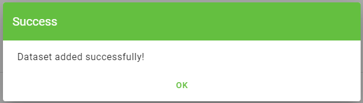
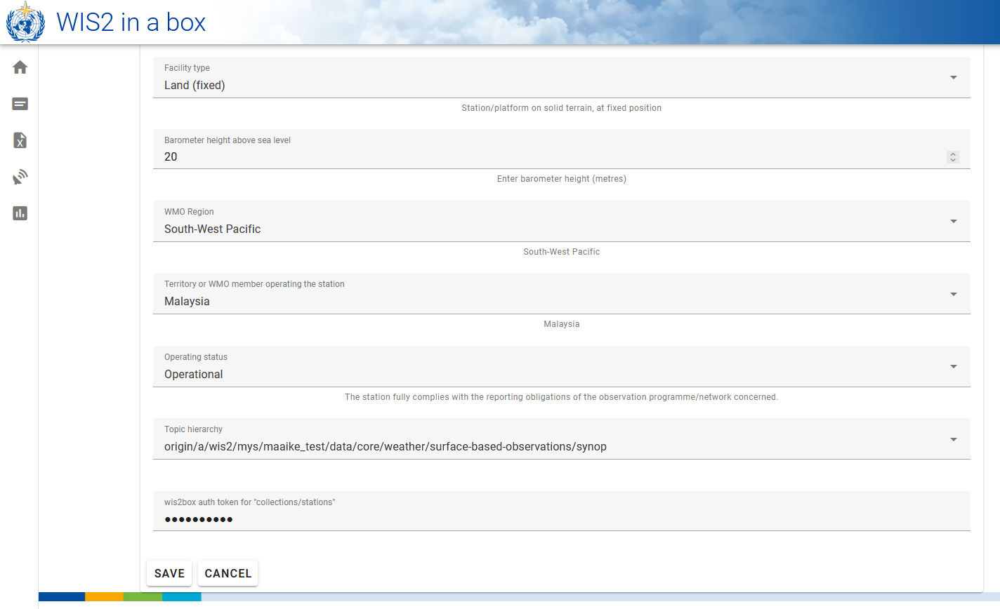

WIS2 in a box Schulung
WIS2 in a box (wis2box) ist eine freie und offene Referenzimplementierung eines WMO WIS2-Knotens. Das Projekt bietet ein Plug-and-Play-Toolset zum Erfassen, Verarbeiten und Veröffentlichen von Wetter-/Klima-/Wasserdaten unter Verwendung von standardbasierten Ansätzen in Übereinstimmung mit den WIS2-Prinzipien. wis2box ermöglicht außerdem den Zugriff auf alle Daten im WIS2-Netzwerk. wis2box ist so konzipiert, dass es für Datenanbieter leicht zugänglich ist und Infrastruktur sowie Dienste für die Datenentdeckung, den Zugriff und die Visualisierung bereitstellt.
Diese Schulung bietet schrittweise Erklärungen zu verschiedenen Aspekten des wis2box-Projekts sowie eine Reihe von Übungen, um Ihnen zu helfen, Daten von WIS2 zu veröffentlichen und herunterzuladen. Die Schulung wird in Form von Übersichtspräsentationen sowie praktischen Übungen angeboten.
Teilnehmer werden in der Lage sein, mit Beispieltestdaten und Metadaten zu arbeiten sowie ihre eigenen Daten und Metadaten zu integrieren.
Diese Schulung deckt eine breite Palette von Themen ab (Installation/Konfiguration/Konfiguration, Veröffentlichung/Herunterladen von Daten usw.).
Ziele und Lernergebnisse
Die Ziele dieser Schulung sind, sich mit den folgenden Punkten vertraut zu machen:
- Kernkonzepte und Komponenten der WIS2-Architektur
- Daten- und Metadatenformate, die in WIS2 für Entdeckung und Zugriff verwendet werden
- wis2box Architektur und Umgebung
- Kernfunktionen von wis2box:
- Verwaltung von Metadaten
- Datenerfassung und -umwandlung in das BUFR-Format
- MQTT-Broker für die Veröffentlichung von WIS2-Nachrichten
- HTTP-Endpunkt für den Daten-Download
- API-Endpunkt für den programmatischen Zugriff auf Daten
Navigation
Die linke Navigation bietet ein Inhaltsverzeichnis für die gesamte Schulung.
Die rechte Navigation bietet ein Inhaltsverzeichnis für eine spezifische Seite.
Voraussetzungen
Wissen
- Grundlegende Linux-Befehle (siehe das Cheatsheet)
- Grundkenntnisse über Netzwerke und Internetprotokolle
Software
Für diese Schulung werden folgende Tools benötigt:
- Eine Instanz mit Ubuntu-Betriebssystem (wird von WMO-Trainer während lokaler Schulungssitzungen bereitgestellt) siehe Zugriff auf Ihr Studenten-VM
- SSH-Client für den Zugriff auf Ihre Instanz
- MQTT Explorer auf Ihrem lokalen Rechner
- SCP- und FTP-Client zum Kopieren von Dateien von Ihrem lokalen Rechner
Konventionen
Frage
Ein Abschnitt wie dieser fordert Sie auf, eine Frage zu beantworten.
Außerdem werden Sie Tipps und Hinweise innerhalb des Textes bemerken:
Tipp
Tipps geben Hilfe, wie man Aufgaben am besten bewältigt.
Hinweis
Hinweise bieten zusätzliche Informationen zum Thema der praktischen Sitzung sowie dazu, wie Aufgaben am besten bewältigt werden.
Beispiele werden wie folgt angezeigt:
Konfiguration
1 2 3 4 | |
Code-Schnipsel, die in einem Terminal/Konsole eingegeben werden müssen, werden angezeigt als:
echo 'Hallo Welt'
Container-Namen (laufende Images) werden in fett dargestellt.
Schulungsort und -materialien
Die Schulungsinhalte, das Wiki und der Issue Tracker werden auf GitHub unter https://github.com/wmo-im/wis2box-training verwaltet.
Drucken des Materials
Diese Schulung kann als PDF exportiert werden. Um dieses Schulungsmaterial zu speichern oder zu drucken, gehen Sie zur Druckseite und wählen Datei > Drucken > Als PDF speichern.
Übungsmaterialien
Übungsmaterialien können von der exercise-materials.zip Zip-Datei heruntergeladen werden.
Unterstützung
Für Probleme/Bugs/Vorschläge oder Verbesserungen/Beiträge zu dieser Schulung nutzen Sie bitte den GitHub-Issue-Tracker.
Alle wis2box-Bugs, Verbesserungen und Probleme können auf GitHub gemeldet werden.
Für zusätzliche Unterstützung oder Fragen kontaktieren Sie bitte wis2-support@wmo.int.
Wie immer kann die Kern-Dokumentation von wis2box immer unter https://docs.wis2box.wis.wmo.int gefunden werden.
Beiträge sind immer ermutigt und willkommen!
Praktische Sitzungen
Verbindung zu WIS2 über MQTT
Lernergebnisse
Am Ende dieser praktischen Sitzung werden Sie in der Lage sein:
- eine Verbindung zum WIS2 Global Broker mit MQTT Explorer herzustellen
- die WIS2 Themenstruktur zu überprüfen
- die Struktur der WIS2-Benachrichtigungsnachrichten zu überprüfen
Einführung
WIS2 verwendet das MQTT-Protokoll, um die Verfügbarkeit von Wetter-/Klima-/Wasserdaten zu bewerben. Der WIS2 Global Broker abonniert alle WIS2-Knoten im Netzwerk und veröffentlicht die empfangenen Nachrichten erneut. Der Global Cache abonniert den Global Broker, lädt die Daten in der Nachricht herunter und veröffentlicht die Nachricht dann erneut im cache Thema mit einer neuen URL. Der Global Discovery Katalog veröffentlicht Entdeckungsmetadaten vom Broker und bietet eine Such-API.
Hier ist ein Beispiel für die Struktur einer WIS2-Benachrichtigungsnachricht für eine Nachricht, die im Thema origin/a/wis2/br-inmet/data/core/weather/surface-based-observations/synop empfangen wurde:
{
"id": "59f9b013-c4b3-410a-a52d-fff18f3f1b47",
"type": "Feature",
"version": "v04",
"geometry": {
"coordinates": [
-38.69389,
-17.96472,
60
],
"type": "Point"
},
"properties": {
"data_id": "br-inmet/data/core/weather/surface-based-observations/synop/WIGOS_0-76-2-2900801000W83499_20240815T060000",
"datetime": "2024-08-15T06:00:00Z",
"pubtime": "2024-08-15T09:52:02Z",
"integrity": {
"method": "sha512",
"value": "TBuWycx/G0lIiTo47eFPBViGutxcIyk7eikppAKPc4aHgOmTIS5Wb9+0v3awMOyCgwpFhTruRRCVReMQMp5kYw=="
},
"content": {
"encoding": "base64",
"value": "QlVGUgAA+gQAABYAACsAAAAAAAIAHAAH6AgPBgAAAAALAAABgMGWx1AAAM0ABOIAAAODM0OTkAAAAAAAAAAAAAAKb5oKEpJ6YkJ6mAAAAAAAAAAAAAAAAv0QeYA29WQa87ZhH4CQP//z+P//BD////+ASznXuUb///8MgAS3/////8X///e+AP////AB/+R/yf////////////////////6/1/79H/3///gEt////////4BLP6QAf/+/pAB//4H0YJ/YeAh/f2///7TH/////9+j//f///////////////////v0f//////////////////////wNzc3Nw==",
"size": 250
},
"wigos_station_identifier": "0-76-2-2900801000W83499"
},
"links": [
{
"rel": "canonical",
"type": "application/bufr",
"href": "http://wis2bra.inmet.gov.br/data/2024-08-15/wis/br-inmet/data/core/weather/surface-based-observations/synop/WIGOS_0-76-2-2900801000W83499_20240815T060000.bufr4",
"length": 250
}
]
}
In dieser praktischen Sitzung lernen Sie, wie Sie das Tool MQTT Explorer verwenden, um eine MQTT-Clientverbindung zu einem WIS2 Global Broker einzurichten und WIS2-Benachrichtigungsnachrichten anzuzeigen.
MQTT Explorer ist ein nützliches Tool, um die Themenstruktur eines gegebenen MQTT-Brokers zu durchsuchen und die veröffentlichten Daten zu überprüfen.
Beachten Sie, dass MQTT hauptsächlich für die "Maschine-zu-Maschine"-Kommunikation verwendet wird; das bedeutet, dass normalerweise ein Client die Nachrichten automatisch verarbeitet, sobald sie empfangen werden. Um programmatisch mit MQTT zu arbeiten (zum Beispiel in Python), können Sie MQTT-Client-Bibliotheken wie paho-mqtt verwenden, um eine Verbindung zu einem MQTT-Broker herzustellen und eingehende Nachrichten zu verarbeiten. Es gibt zahlreiche MQTT-Client- und Server-Software, abhängig von Ihren Anforderungen und Ihrer technischen Umgebung.
Verwendung von MQTT Explorer zur Verbindung mit dem Global Broker
Um Nachrichten, die von einem WIS2 Global Broker veröffentlicht wurden, anzusehen, können Sie "MQTT Explorer" verwenden, das von der MQTT Explorer-Website heruntergeladen werden kann.
Öffnen Sie MQTT Explorer und fügen Sie eine neue Verbindung zum Global Broker hinzu, der von MeteoFrance gehostet wird, mit den folgenden Details:
- host: globalbroker.meteo.fr
- port: 8883
- username: everyone
- password: everyone

Klicken Sie auf die Schaltfläche 'ADVANCED', entfernen Sie die vorkonfigurierten Themen und fügen Sie die folgenden Themen zum Abonnieren hinzu:
origin/a/wis2/#

Note
Beim Einrichten von MQTT-Abonnements können Sie die folgenden Platzhalter verwenden:
- Einzelniveau (+): Ein Einzelniveau-Platzhalter ersetzt eine Themenstufe
- Mehrfachniveau (#): Ein Mehrfachniveau-Platzhalter ersetzt mehrere Themenstufen
In diesem Fall wird origin/a/wis2/# alle Themen unter dem Thema origin/a/wis2 abonnieren.
Klicken Sie auf 'BACK', dann auf 'SAVE', um Ihre Verbindungs- und Abonnementdetails zu speichern. Dann klicken Sie auf 'CONNECT':
Nachrichten sollten in Ihrer MQTT Explorer-Sitzung wie folgt erscheinen:

Sie sind jetzt bereit, die WIS2-Themen und Nachrichtenstrukturen zu erkunden.
Übung 1: Überprüfung der WIS2-Themenstruktur
Verwenden Sie MQTT, um die Themenstruktur unter den origin Themen zu durchsuchen.
Question
Wie können wir das WIS-Zentrum unterscheiden, das die Daten veröffentlicht hat?
Klicken, um die Antwort zu enthüllen
Sie können im linken Fenster in MQTT Explorer auf die Themenstruktur klicken, um sie zu erweitern.
Wir können das WIS-Zentrum, das die Daten veröffentlicht hat, anhand der vierten Ebene der Themenstruktur erkennen. Zum Beispiel zeigt uns das folgende Thema:
origin/a/wis2/br-inmet/data/core/weather/surface-based-observations/synop
dass die Daten von einem WIS-Zentrum mit der Zentrum-ID br-inmet veröffentlicht wurden, das die Zentrum-ID für das Instituto Nacional de Meteorologia - INMET, Brasilien, ist.
Question
Wie können wir zwischen Nachrichten unterscheiden, die von WIS-Zentren veröffentlicht wurden, die ein GTS-zu-WIS2-Gateway hosten, und Nachrichten, die von WIS-Zentren veröffentlicht wurden, die einen WIS2-Knoten hosten?
Klicken, um die Antwort zu enthüllen
Wir können Nachrichten, die von einem GTS-zu-WIS2-Gateway kommen, anhand der Zentrum-ID in der Themenstruktur unterscheiden. Zum Beispiel zeigt uns das folgende Thema:
origin/a/wis2/de-dwd-gts-to-wis2/data/core/I/S/A/I/01/sbbr
dass die Daten von dem GTS-zu-WIS2-Gateway veröffentlicht wurden, das vom Deutschen Wetterdienst (DWD) in Deutschland gehostet wird. Das GTS-zu-WIS2-Gateway ist eine spezielle Art von Datenveröffentlicher, der Daten vom Globalen Telekommunikationssystem (GTS) zu WIS2 veröffentlicht. Die Themenstruktur besteht aus den TTAAii CCCC-Headern für die GTS-Nachrichten.
Übung 2: Überprüfung der WIS2-Nachrichtenstruktur
Trennen Sie die Verbindung von MQTT Explorer und aktualisieren Sie die 'Advanced'-Abschnitte, um das Abonnement auf die folgenden zu ändern:
origin/a/wis2/+/data/core/weather/surface-based-observations/synopcache/a/wis2/+/data/core/weather/surface-based-observations/synop

Note
Der + Platzhalter wird verwendet, um alle WIS-Zentren zu abonnieren.
Stellen Sie die Verbindung zum Global Broker wieder her und warten Sie, bis Nachrichten erscheinen.
Sie können den Inhalt der WIS2-Nachricht im Abschnitt "Value" auf der rechten Seite anzeigen. Versuchen Sie, die Themenstruktur zu erweitern, um die verschiedenen Ebenen der Nachricht zu sehen, bis Sie die letzte Ebene erreichen und den Nachrichteninhalt einer der Nachrichten überprüfen.
Question
Wie können wir den Zeitstempel identifizieren, zu dem die Daten veröffentlicht wurden? Und wie können wir den Zeitstempel identifizieren, zu dem die Daten erfasst wurden?
Klicken, um die Antwort zu enthüllen
Der Zeitstempel, zu dem die Daten veröffentlicht wurden, befindet sich im Abschnitt properties der Nachricht mit einem Schlüssel von pubtime.
Der Zeitstempel, zu dem die Daten erfasst wurden, befindet sich im Abschnitt properties der Nachricht mit einem Schlüssel von datetime.

Question
Wie können wir die Daten von der in der Nachricht angegebenen URL herunterladen?
Klicken, um die Antwort zu enthüllen
Die URL befindet sich im Abschnitt links mit rel="canonical" und ist durch den Schlüssel href definiert.
Sie können die URL kopieren und in einen Webbrowser einfügen, um die Daten herunterzuladen.
Übung 3: Überprüfung des Unterschieds zwischen 'origin' und 'cache' Themen
Stellen Sie sicher, dass Sie weiterhin mit dem Global Broker verbunden sind und die Themenabonnements origin/a/wis2/+/data/core/weather/surface-based-observations/synop und cache/a/wis2/+/data/core/weather/surface-based-observations/synop verwenden, wie in Übung 2 beschrieben.
Versuchen Sie, eine Nachricht für dieselbe Zentrum-ID zu identifizieren, die sowohl auf den origin- als auch auf den cache-Themen veröffentlicht wurde.
Question
Was ist der Unterschied zwischen den Nachrichten, die auf den origin- und den cache-Themen veröffentlicht wurden?
Klicken, um die Antwort zu enthüllen
Die Nachrichten, die auf den origin-Themen veröffentlicht wurden, sind die Originalnachrichten, die der Global Broker von den WIS2-Knoten im Netzwerk erneut veröffentlicht.
Die Nachrichten, die auf den cache-Themen veröffentlicht wurden, sind die Nachrichten, für die Daten vom Global Cache heruntergeladen wurden. Wenn Sie den Inhalt der Nachricht aus dem Thema, das mit cache beginnt, überprüfen, werden Sie sehen, dass der 'canonical'-Link auf eine neue URL aktualisiert wurde.
Es gibt mehrere Global Caches im WIS2-Netzwerk, daher erhalten Sie eine Nachricht von jedem Global Cache, der die Nachricht heruntergeladen hat.
Der Global Cache lädt nur Nachrichten herunter und veröffentlicht sie erneut, die auf dem ../data/core/... Themenhierarchie veröffentlicht wurden.
Schlussfolgerung
Herzlichen Glückwunsch!
In dieser praktischen Sitzung haben Sie gelernt:
- wie man WIS2 Global Broker-Dienste mit MQTT Explorer abonniert
- die WIS2-Themenstruktur
- die WIS2-Benachrichtigungsnachrichtenstruktur
- den Unterschied zwischen Kern- und empfohlenen Daten
- die Themenstruktur, die vom GTS-zu-WIS2-Gateway verwendet wird
- den Unterschied zwischen Nachrichten des Global Brokers, die auf den
origin- undcache-Themen veröffentlicht wurden
Zugriff auf dein Studenten-VM
Lernergebnisse
Am Ende dieser praktischen Sitzung wirst du in der Lage sein:
- auf dein Studenten-VM über SSH und WinSCP zuzugreifen
- zu überprüfen, ob die erforderliche Software für die praktischen Übungen installiert ist
- zu überprüfen, ob du Zugang zu den Übungsmaterialien für dieses Training auf deinem lokalen Studenten-VM hast
Einleitung
Im Rahmen von lokal durchgeführten wis2box-Schulungen kannst du auf dein persönliches Studenten-VM im lokalen Trainingsnetzwerk namens "WIS2-Training" zugreifen.
Auf deinem Studenten-VM ist die folgende Software vorinstalliert:
- Ubuntu 22.0.4.3 LTS ubuntu-22.04.3-live-server-amd64.iso
- Python 3.10.12
- Docker 24.0.6
- Docker Compose 2.21.0
- Texteditoren: vim, nano
Note
Wenn du dieses Training außerhalb einer lokalen Schulungssitzung durchführen möchtest, kannst du deine eigene Instanz über einen beliebigen Cloud-Anbieter bereitstellen, zum Beispiel:
- GCP (Google Cloud Platform) VM-Instanz
e2-medium - AWS (Amazon Web Services) ec2-Instanz
t3a.medium - Azure (Microsoft) Azure Virtual Machine
standard_b2s
Wähle als Betriebssystem Ubuntu Server 22.0.4 LTS.
Nachdem du deine VM erstellt hast, stelle sicher, dass Python, Docker und Docker Compose installiert sind, wie unter wis2box-software-dependencies beschrieben.
Das Release-Archiv für wis2box, das in diesem Training verwendet wird, kann wie folgt heruntergeladen werden:
wget https://github.com/wmo-im/wis2box/releases/download/1.0.0rc1/wis2box-setup-1.0.0rc1.zip
unzip wis2box-setup-1.0.0rc1.zip
Das neueste 'wis2box-setup'-Archiv findest du immer unter https://github.com/wmo-im/wis2box/releases.
Das Übungsmaterial, das in diesem Training verwendet wird, kann wie folgt heruntergeladen werden:
wget https://training.wis2box.wis.wmo.int/exercise-materials.zip
unzip exercise-materials.zip
Die folgenden zusätzlichen Python-Pakete sind erforderlich, um die Übungsmaterialien auszuführen:
pip3 install minio
Wenn du das Studenten-VM verwendest, das während der lokalen WIS2-Schulungen bereitgestellt wird, ist die erforderliche Software bereits installiert.
Verbinde dich mit deinem Studenten-VM im lokalen Trainingsnetzwerk
Verbinde deinen PC mit dem lokalen WLAN, das während der WIS2-Schulung im Raum ausgestrahlt wird, gemäß den Anweisungen des Trainers.
Verwende einen SSH-Client, um dich mit deinem Studenten-VM zu verbinden, verwende dazu:
- Host: (während der Präsenzschulung bereitgestellt)
- Port: 22
- Benutzername: (während der Präsenzschulung bereitgestellt)
- Passwort: (während der Präsenzschulung bereitgestellt)
Tip
Kontaktiere einen Trainer, wenn du dir beim Hostnamen/Benutzernamen unsicher bist oder Probleme beim Verbinden hast.
Sobald du verbunden bist, ändere bitte dein Passwort, um sicherzustellen, dass andere keinen Zugriff auf dein VM haben:
limper@student-vm:~$ passwd
Passwort ändern für testuser.
Aktuelles Passwort:
Neues Passwort:
Neues Passwort wiederholen:
passwd: Passwort erfolgreich aktualisiert
Überprüfe die Softwareversionen
Um wis2box ausführen zu können, sollten Python, Docker und Docker Compose auf dem Studenten-VM vorinstalliert sein.
Überprüfe die Python-Version:
python3 --version
Python 3.10.12
Überprüfe die Docker-Version:
docker --version
Docker-Version 24.0.6, Build ed223bc
Überprüfe die Docker Compose-Version:
docker compose version
Docker Compose-Version v2.21.0
Um sicherzustellen, dass dein Benutzer Docker-Befehle ausführen kann, wurde dein Benutzer zur docker-Gruppe hinzugefügt.
Um zu testen, dass dein Benutzer docker hello-world ausführen kann, führe den folgenden Befehl aus:
docker run hello-world
Dies sollte das hello-world-Image herunterladen und einen Container ausführen, der eine Nachricht ausgibt.
Überprüfe, ob du Folgendes in der Ausgabe siehst:
...
Hallo von Docker!
Diese Nachricht zeigt, dass deine Installation anscheinend korrekt funktioniert.
...
Überprüfe die Übungsmaterialien
Überprüfe den Inhalt deines Home-Verzeichnisses; diese Materialien werden als Teil des Trainings und der praktischen Sitzungen verwendet.
ls ~/
exercise-materials wis2box-1.0.0rc1
Wenn du WinSCP auf deinem lokalen PC installiert hast, kannst du es verwenden, um dich mit deinem Studenten-VM zu verbinden und den Inhalt deines Home-Verzeichnisses zu inspizieren sowie Dateien zwischen deinem VM und deinem lokalen PC herunterzuladen oder hochzuladen.
WinSCP ist nicht für das Training erforderlich, kann aber nützlich sein, wenn du Dateien auf deinem VM mit einem Texteditor auf deinem lokalen PC bearbeiten möchtest.
So kannst du dich mit WinSCP mit deinem Studenten-VM verbinden:
Öffne WinSCP und klicke auf "Neue Seite". Du kannst eine neue SCP-Verbindung zu deinem VM wie folgt erstellen:

Klicke auf 'Speichern' und dann auf 'Anmelden', um dich mit deinem VM zu verbinden.
Und du solltest den folgenden Inhalt sehen können:
Schlussfolgerung
Herzlichen Glückwunsch!
In dieser praktischen Sitzung hast du gelernt, wie man:
- auf dein Studenten-VM über SSH und WinSCP zugreift
- überprüft, ob die erforderliche Software für die praktischen Übungen installiert ist
- überprüft, ob du Zugang zu den Übungsmaterialien für dieses Training auf deinem lokalen Studenten-VM hast
Initialisierung von wis2box
Lernergebnisse
Am Ende dieser praktischen Sitzung werden Sie in der Lage sein:
- das Skript
wis2box-create-config.pyauszuführen, um die anfängliche Konfiguration zu erstellen - wis2box zu starten und den Status seiner Komponenten zu überprüfen
- auf die wis2box-webapp, API, MinIO UI und das Grafana-Dashboard in einem Browser zuzugreifen
- sich mit dem lokalen wis2box-broker unter Verwendung von MQTT Explorer zu verbinden
Note
Die aktuellen Schulungsmaterialien verwenden wis2box-1.0.0rc1.
Siehe Zugriff auf Ihre Studenten-VM für Anweisungen zum Herunterladen und Installieren des wis2box-Software-Stacks, wenn Sie diese Schulung außerhalb einer lokalen Schulungssitzung durchführen.
Vorbereitung
Melden Sie sich mit Ihrem Benutzernamen und Passwort an Ihrer zugewiesenen VM an und stellen Sie sicher, dass Sie sich im Verzeichnis wis2box-1.0.0rc1 befinden:
cd ~/wis2box-1.0.0rc1
Erstellung der anfänglichen Konfiguration
Die anfängliche Konfiguration für die wis2box erfordert:
- eine Umgebungsdatei
wis2box.envmit den Konfigurationsparametern - ein Verzeichnis auf dem Host-Computer, das zwischen dem Host-Computer und den wis2box-Containern geteilt wird, definiert durch die Umgebungsvariable
WIS2BOX_HOST_DATADIR
Das Skript wis2box-create-config.py kann verwendet werden, um die anfängliche Konfiguration Ihrer wis2box zu erstellen.
Es wird Ihnen eine Reihe von Fragen stellen, um Ihre Konfiguration einzurichten.
Sie können die Konfigurationsdateien überprüfen und aktualisieren, nachdem das Skript abgeschlossen ist.
Führen Sie das Skript wie folgt aus:
python3 wis2box-create-config.py
wis2box-host-data-Verzeichnis
Das Skript wird Sie bitten, das Verzeichnis für die Umgebungsvariable WIS2BOX_HOST_DATADIR einzugeben.
Beachten Sie, dass Sie den vollständigen Pfad zu diesem Verzeichnis angeben müssen.
Zum Beispiel, wenn Ihr Benutzername username ist, ist der vollständige Pfad zum Verzeichnis /home/username/wis2box-data:
username@student-vm-username:~/wis2box-1.0.0rc1$ python3 wis2box-create-config.py
Bitte geben Sie das Verzeichnis an, das für WIS2BOX_HOST_DATADIR verwendet werden soll:
/home/username/wis2box-data
Das Verzeichnis, das für WIS2BOX_HOST_DATADIR verwendet wird, wird auf folgendes festgelegt:
/home/username/wis2box-data
Ist das korrekt? (j/n/exit)
j
Das Verzeichnis /home/username/wis2box-data wurde erstellt.
wis2box URL
Als Nächstes werden Sie gebeten, die URL für Ihre wis2box einzugeben. Dies ist die URL, die verwendet wird, um auf die wis2box-Webanwendung, API und UI zuzugreifen.
Bitte verwenden Sie http://<Ihr-Hostname-oder-IP> als URL.
Bitte geben Sie die URL der wis2box ein:
Für lokale Tests ist die URL http://localhost
Um den Fernzugriff zu ermöglichen, sollte die URL auf die öffentliche IP-Adresse oder den Domainnamen des Servers zeigen, der die wis2box hostet.
http://username.wis2.training
Die URL der wis2box wird auf folgendes festgelegt:
http://username.wis2.training
Ist das korrekt? (j/n/exit)
WEBAPP-, STORAGE- und BROKER-Passwörter
Sie können die Option der zufälligen Passwortgenerierung wählen, wenn Sie nach WIS2BOX_WEBAPP_PASSWORD, WIS2BOX_STORAGE_PASSWORD, WIS2BOX_BROKER_PASSWORD gefragt werden und Ihr eigenes definieren.
Machen Sie sich keine Sorgen, sich diese Passwörter zu merken, sie werden in der Datei wis2box.env in Ihrem Verzeichnis wis2box-1.0.0rc1 gespeichert.
Überprüfung von wis2box.env
Nachdem das Skript abgeschlossen ist, überprüfen Sie den Inhalt der Datei wis2box.env in Ihrem aktuellen Verzeichnis:
cat ~/wis2box-1.0.0rc1/wis2box.env
Oder überprüfen Sie den Inhalt der Datei über WinSCP.
Question
Welcher Wert steht für WISBOX_BASEMAP_URL in der Datei wis2box.env?
Klicken, um die Antwort zu enthüllen
Der Standardwert für WIS2BOX_BASEMAP_URL ist https://{s}.tile.openstreetmap.org/{z}/{x}/{y}.png.
Diese URL bezieht sich auf den OpenStreetMap-Tile-Server. Wenn Sie einen anderen Kartenanbieter verwenden möchten, können Sie diese URL ändern, um auf einen anderen Tile-Server zu zeigen.
Question
Welcher Wert steht für die Umgebungsvariable WIS2BOX_STORAGE_DATA_RETENTION_DAYS in der Datei wis2box.env?
Klicken, um die Antwort zu enthüllen
Der Standardwert für WIS2BOX_STORAGE_DATA_RETENTION_DAYS beträgt 30 Tage. Sie können diesen Wert ändern, wenn Sie möchten.
Der wis2box-management-Container führt täglich einen Cronjob aus, um Daten, die älter als die durch WIS2BOX_STORAGE_DATA_RETENTION_DAYS definierte Anzahl von Tagen sind, aus dem wis2box-public-Bucket und dem API-Backend zu entfernen:
0 0 * * * su wis2box -c "wis2box data clean --days=$WIS2BOX_STORAGE_DATA_RETENTION_DAYS"
Note
Die Datei wis2box.env enthält Umgebungsvariablen, die die Konfiguration Ihrer wis2box definieren. Weitere Informationen finden Sie in der wis2box-Dokumentation.
Bearbeiten Sie die Datei wis2box.env nicht, es sei denn, Sie sind sicher, was Sie ändern. Falsche Änderungen können dazu führen, dass Ihre wis2box nicht mehr funktioniert.
Teilen Sie den Inhalt Ihrer Datei wis2box.env nicht mit anderen, da sie sensible Informationen wie Passwörter enthält.
Starten von wis2box
Stellen Sie sicher, dass Sie sich im Verzeichnis befinden, das die Definitionsdateien des wis2box-Software-Stacks enthält:
cd ~/wis2box-1.0.0rc1
Starten Sie wis2box mit dem folgenden Befehl:
python3 wis2box-ctl.py start
Wenn Sie diesen Befehl zum ersten Mal ausführen, sehen Sie die folgende Ausgabe:
Keine docker-compose.images-*.yml-Dateien gefunden, eine wird erstellt
Aktuelle Version=Undefined, neueste Version=1.0.0rc1
Möchten Sie aktualisieren? (j/n/exit)
Wählen Sie j und das Skript wird die Datei docker-compose.images-1.0.0rc1.yml erstellen, die erforderlichen Docker-Images herunterladen und die Dienste starten.
Das Herunterladen der Bilder kann je nach Geschwindigkeit Ihrer Internetverbindung einige Zeit in Anspruch nehmen. Dieser Schritt ist nur beim ersten Start von wis2box erforderlich.
Überprüfen Sie den Status mit dem folgenden Befehl:
python3 wis2box-ctl.py status
Wiederholen Sie diesen Befehl, bis alle Dienste laufen.
wis2box und Docker
wis2box wird als eine Reihe von Docker-Containern ausgeführt, die von docker-compose verwaltet werden.
Die Dienste sind in den verschiedenen docker-compose*.yml definiert, die im Verzeichnis ~/wis2box-1.0.0rc1/ zu finden sind.
Das Python-Skript wis2box-ctl.py wird verwendet, um die zugrunde liegenden Docker Compose-Befehle auszuführen, die die wis2box-Dienste steuern.
Sie müssen die Details der Docker-Container nicht kennen, um den wis2box-Software-Stack auszuführen, aber Sie können die docker-compose*.yml- und Dateien einsehen, um zu sehen, wie die Dienste definiert sind. Wenn Sie mehr über Docker erfahren möchten, finden Sie weitere Informationen in der Docker-Dokumentation.
Um sich beim wis2box-management-Container anzumelden, verwenden Sie den folgenden Befehl:
python3 wis2box-ctl.py login
Im wis2box-management-Container können Sie verschiedene Befehle ausführen, um Ihre wis2box zu verwalten, wie zum Beispiel:
wis2box auth add-token --path processes/wis2box: um ein Autorisierungstoken für den Endpunktprocesses/wis2boxzu erstellenwis2box data clean --days=<Anzahl-der-Tage>: um Daten, die älter als eine bestimmte Anzahl von Tagen sind, aus demwis2box-public-Bucket zu bereinigen
Um den Container zu verlassen und zum Host-Computer zurückzukehren, verwenden Sie den folgenden Befehl:
exit
Führen Sie den folgenden Befehl aus, um die auf Ihrem Host-Computer laufenden Docker-Container zu sehen:
docker ps
Sie sollten die folgenden Container laufen sehen:
- wis2box-management
- wis2box-api
- wis2box-minio
- wis2box-webapp
- wis2box-auth
- wis2box-ui
- wis2downloader
- elasticsearch
- elasticsearch-exporter
- nginx
- mosquitto
- prometheus
- grafana
- loki
Diese Container sind Teil des wis2box-Software-Stacks und bieten die verschiedenen Dienste, die zum Betrieb der wis2box erforderlich sind.
Führen Sie den folgenden Befehl aus, um die auf Ihrem Host-Computer laufenden Docker-Volumes zu sehen:
docker volume ls
Sie sollten die folgenden Volumes sehen:
- wis2box_project_auth-data
- wis2box_project_es-data
- wis2box_project_htpasswd
- wis2box_project_minio-data
- wis2box_project_prometheus-data
- wis2box_project_loki-data
Sowie einige anonyme Volumes, die von den verschiedenen Containern verwendet werden.
Die Volumes, die mit wis2box_project_ beginnen, werden verwendet, um persistente Daten für die verschiedenen Dienste im wis2box-Software-Stack zu speichern.
wis2box API
Die wis2box enthält eine API (Application Programming Interface), die Datenzugriff und Prozesse für interaktive Visualisierung, Datentransformation und Veröffentlichung bereitstellt.
Öffnen Sie einen neuen Tab und navigieren Sie zur Seite http://<Ihr-Host>/oapi.

Dies ist die Startseite der wis2box-API (betrieben über den wis2box-api-Container).
Question
Welche Sammlungen sind derzeit verfügbar?
Klicken, um die Antwort zu enthüllen
Um die derzeit über die API verfügbaren Sammlungen anzuzeigen, klicken Sie auf View the collections in this service:

Die folgenden Sammlungen sind derzeit verfügbar:
- Stationen
- Datenbenachrichtigungen
- Entdeckungsmetadaten
Question
Wie viele Datenbenachrichtigungen wurden veröffentlicht?
Klicken, um die Antwort zu enthüllen
Klicken Sie auf "Datenbenachrichtigungen", dann klicken Sie auf Browse through the items of "Data Notifications".
Sie werden feststellen, dass die Seite "Keine Elemente" anzeigt, da noch keine Datenbenachrichtigungen veröffentlicht wurden.
wis2box webapp
Öffnen Sie einen Webbrowser und besuchen Sie die Seite http://<Ihr-Host>/wis2box-webapp.
Es erscheint ein Pop-up, das nach Ihrem Benutzernamen und Passwort fragt. Verwenden Sie den Standardbenutzernamen wis2box-user und das in der Datei wis2box.env definierte WIS2BOX_WEBAPP_PASSWORD und klicken Sie auf "Anmelden":
Note
Überprüfen Sie Ihre wis2box.env auf den Wert Ihres WIS2BOX_WEBAPP_PASSWORD. Sie können den folgenden Befehl verwenden, um den Wert dieser Umgebungsvariablen zu überprüfen:
cat ~/wis2box-1.0.0rc1/wis2box.env | grep WIS2BOX_WEBAPP_PASSWORD
Nachdem Sie sich angemeldet haben, bewegen Sie die Maus zum Menü auf der linken Seite, um die verfügbaren Optionen in der wis2box-Webanwendung zu sehen:

Dies ist die wis2box-Webanwendung, die es Ihnen ermöglicht, mit Ihrer wis2box zu interagieren:
- Erstellen und Verwalten von Datensätzen
- Aktualisieren/Überprüfen Ihrer Stationsmetadaten
- ASCII- und CSV-Daten einlesen
- Benachrichtigungen überwachen, die auf Ihrem wis2box-broker veröffentlicht wurden
Wir werden diese Webanwendung in einer späteren Sitzung verwenden.
wis2box-broker
Öffnen Sie den MQTT Explorer auf Ihrem Computer und bereiten Sie eine neue Verbindung vor, um sich mit Ihrem Broker zu verbinden (betrieben über den wis2box-broker-Container).
Klicken Sie auf +, um eine neue Verbindung hinzuzufügen:

Sie können auf die Schaltfläche 'ERWEITERT' klicken und überprüfen, ob Sie Abonnements für die folgenden Themen haben:
#$SYS/#

Note
Das Thema # ist ein Platzhalter-Abonnement, das alle Themen abonniert, die auf dem Broker veröffentlicht werden.
Die unter dem $SYS-Thema veröffentlichten Nachrichten sind Systemnachrichten, die vom mosquitto-Dienst selbst veröffentlicht werden.
Verwenden Sie die folgenden Verbindungsdetails und ersetzen Sie den Wert von <Ihr-Host> durch Ihren Hostnamen und <WIS2BOX_BROKER_PASSWORD> durch den Wert aus Ihrer wis2box.env-Datei:
- Protokoll: mqtt://
- Host:
<Ihr-Host> - Port: 1883
- Benutzername: wis2box
- Passwort:
<WIS2BOX_BROKER_PASSWORD>
Note
Sie können Ihre wis2box.env überprüfen, um den Wert Ihres WIS2BOX_BROKER_PASSWORD zu sehen. Sie können den folgenden Befehl verwenden, um den Wert dieser Umgebungsvariablen zu überprüfen:
cat ~/wis2box-1.0.0rc1/wis2box.env | grep WIS2BOX_BROKER_PASSWORD
Beachten Sie, dass dies Ihr interner Broker-Passwort ist. Der Global Broker verwendet verschiedene (nur-Lese-) Anmeldeinformationen, um sich bei Ihrem Broker anzumelden. Teilen Sie dieses Passwort niemals mit jemandem.
Stellen Sie sicher, dass Sie auf "SPEICHERN" klicken, um Ihre Verbindungsdetails zu speichern.
Klicken Sie dann auf "VERBINDEN", um sich mit Ihrem wis2box-broker zu verbinden.

Nachdem Sie verbunden sind, überprüfen Sie, dass die internen mosquitto-Statistiken von Ihrem Broker unter dem $SYS-Thema veröffentlicht werden:

Lassen Sie den MQTT Explorer geöffnet, da wir ihn verwenden werden, um die auf dem Broker veröffentlichten Nachrichten zu überwachen.
MinIO UI
Öffnen Sie einen Webbrowser und besuchen Sie die Seite http://<Ihr-Host>:9001:
<img alt="minio-ui.png" src
Konfigurieren von Datensätzen in wis2box
Lernergebnisse
Am Ende dieser praktischen Sitzung werden Sie in der Lage sein:
- einen neuen Datensatz zu erstellen
- Entdeckungsmetadaten für einen Datensatz zu erstellen
- Datenzuordnungen für einen Datensatz zu konfigurieren
- eine WIS2-Benachrichtigung mit einem WCMP2-Datensatz zu veröffentlichen
- Ihren Datensatz zu aktualisieren und erneut zu veröffentlichen
Einführung
wis2box verwendet Datensätze, die mit Entdeckungsmetadaten und Datenzuordnungen verknüpft sind.
Entdeckungsmetadaten werden verwendet, um einen WCMP2 (WMO Core Metadata Profile 2) Datensatz zu erstellen, der mittels einer WIS2-Benachrichtigung, die auf Ihrem wis2box-Broker veröffentlicht wird, geteilt wird.
Die Datenzuordnungen werden verwendet, um ein Daten-Plugin mit Ihren Eingabedaten zu verknüpfen, sodass Ihre Daten vor der Veröffentlichung mittels der WIS2-Benachrichtigung transformiert werden können.
Diese Sitzung führt Sie durch das Erstellen eines neuen Datensatzes, das Erstellen von Entdeckungsmetadaten und das Konfigurieren von Datenzuordnungen. Sie werden Ihren Datensatz in der wis2box-API überprüfen und die WIS2-Benachrichtigung für Ihre Entdeckungsmetadaten überprüfen.
Vorbereitung
Verbinden Sie sich mit Ihrem Broker über MQTT Explorer.
Verwenden Sie anstelle Ihrer internen Broker-Anmeldeinformationen die öffentlichen Anmeldeinformationen everyone/everyone:

Hinweis
Sie sollten niemals die Anmeldeinformationen Ihres internen Brokers mit externen Benutzern teilen. Der Benutzer 'everyone' ist ein öffentlicher Benutzer, um das Teilen von WIS2-Benachrichtigungen zu ermöglichen.
Die Anmeldeinformationen everyone/everyone haben nur Lesezugriff auf das Thema 'origin/a/wis2/#'. Dies ist das Thema, auf dem die WIS2-Benachrichtigungen veröffentlicht werden. Der Global Broker kann sich mit diesen öffentlichen Anmeldeinformationen anmelden, um die Benachrichtigungen zu erhalten.
Der Benutzer 'everyone' wird keine internen Themen sehen oder Nachrichten veröffentlichen können.
Öffnen Sie einen Browser und eine Seite zu http://<your-host>/wis2box-webapp. Stellen Sie sicher, dass Sie angemeldet sind und auf die Seite 'Datensatz-Editor' zugreifen können.
Siehe den Abschnitt über Initialisierung von wis2box, wenn Sie sich daran erinnern müssen, wie man sich mit dem Broker verbindet oder auf die wis2box-Webapp zugreift.
Erstellen eines Autorisierungstokens für Prozesse/wis2box
Sie benötigen ein Autorisierungstoken für den Endpunkt 'processes/wis2box', um Ihren Datensatz zu veröffentlichen.
Um ein Autorisierungstoken zu erstellen, greifen Sie über SSH auf Ihre Trainings-VM zu und verwenden Sie die folgenden Befehle, um sich im wis2box-Management-Container anzumelden:
cd ~/wis2box-1.0.0rc1
python3 wis2box-ctl.py login
Führen Sie dann den folgenden Befehl aus, um ein zufällig generiertes Autorisierungstoken für den Endpunkt 'processes/wis2box' zu erstellen:
wis2box auth add-token --path processes/wis2box
Sie können auch ein Token mit einem spezifischen Wert erstellen, indem Sie das Token als Argument für den Befehl bereitstellen:
wis2box auth add-token --path processes/wis2box MyS3cretToken
Stellen Sie sicher, dass Sie den Tokenwert kopieren und auf Ihrem lokalen Rechner speichern, da Sie ihn später benötigen werden.
Sobald Sie Ihr Token haben, können Sie den wis2box-Management-Container verlassen:
exit
Erstellen eines neuen Datensatzes in der wis2box-Webapp
Navigieren Sie auf der wis2box-Webapp Ihrer wis2box-Instanz zur Seite 'Datensatz-Editor', indem Sie zu http://<your-host>/wis2box-webapp gehen und 'Datensatz-Editor' aus dem Menü auf der linken Seite auswählen.
Auf der Seite 'Datensatz-Editor' klicken Sie unter dem Tab 'Datensätze' auf "Neu erstellen ...":

Ein Popup-Fenster erscheint und fordert Sie auf, Folgendes anzugeben:
- Zentrum-ID: Dies ist das Akronym der Agentur (in Kleinbuchstaben und ohne Leerzeichen), wie es vom WMO-Mitglied angegeben wurde, das das Datenzentrum identifiziert, das für die Veröffentlichung der Daten verantwortlich ist.
- Datentyp: Der Datentyp, für den Sie Metadaten erstellen. Sie können zwischen der Verwendung einer vordefinierten Vorlage oder der Auswahl von 'andere' wählen. Wenn 'andere' ausgewählt wird, müssen weitere Felder manuell ausgefüllt werden.
Zentrum-ID
Ihre Zentrum-ID sollte mit der TLD Ihres Landes beginnen, gefolgt von einem Bindestrich (-) und einem abgekürzten Namen Ihrer Organisation (zum Beispiel de-dwd). Die Zentrum-ID muss in Kleinbuchstaben sein und darf nur alphanumerische Zeichen verwenden. Die Dropdown-Liste zeigt alle derzeit auf WIS2 registrierten Zentrum-IDs sowie jede Zentrum-ID, die Sie bereits in wis2box erstellt haben.
Datentypvorlagen
Das Feld Datentyp ermöglicht es Ihnen, aus einer Liste von Vorlagen auszuwählen, die im Datensatz-Editor der wis2box-Webapp verfügbar sind. Eine Vorlage füllt das Formular mit vorgeschlagenen Standardwerten aus, die für den Datentyp geeignet sind. Dies umfasst vorgeschlagene Titel und Schlüsselwörter für die Metadaten und vorkonfigurierte Daten-Plugins. Das Thema wird auf das Standardthema für den Datentyp festgelegt.
Zum Zwecke des Trainings werden wir den Datentyp weather/surface-based-observations/synop verwenden, der Daten-Plugins enthält, die sicherstellen, dass die Daten vor der Veröffentlichung in das BUFR-Format umgewandelt werden.
Wenn Sie CAP-Warnungen über wis2box veröffentlichen möchten, verwenden Sie die Vorlage weather/advisories-warnings. Diese Vorlage enthält ein Daten-Plugin, das überprüft, ob die Eingabedaten eine gültige CAP-Warnung sind, bevor sie veröffentlicht wird. Um CAP-Warnungen zu erstellen und über wis2box zu veröffentlichen, können Sie CAP Composer verwenden.
Bitte wählen Sie eine Zentrum-ID, die für Ihre Organisation geeignet ist.
Für Datentyp wählen Sie weather/surface-based-observations/synop:

Klicken Sie auf Weiter zum Formular, um fortzufahren. Ihnen wird nun das Datensatz-Editor-Formular präsentiert.
Da Sie den Datentyp weather/surface-based-observations/synop ausgewählt haben, wird das Formular mit einigen Anfangswerten, die sich auf diesen Datentyp beziehen, vorausgefüllt.
Erstellen von Entdeckungsmetadaten
Das Datensatz-Editor-Formular ermöglicht es Ihnen, die Entdeckungsmetadaten für Ihren Datensatz bereitzustellen, die der wis2box-Management-Container verwenden wird, um einen WCMP2-Datensatz zu veröffentlichen.
Da Sie den Datentyp 'weather/surface-based-observations/synop' ausgewählt haben, wird das Formular mit einigen Standardwerten vorausgefüllt.
Bitte stellen Sie sicher, dass Sie die automatisch generierte 'Lokale ID' durch einen beschreibenden Namen für Ihren Datensatz ersetzen, z. B. 'synop-dataset-wis2training':

Überprüfen Sie den Titel und die Schlüsselwörter und aktualisieren Sie sie bei Bedarf und geben Sie eine Beschreibung für Ihren Datensatz an.
Beachten Sie, dass es Optionen gibt, die 'WMO-Datenrichtlinie' von 'core' auf 'empfohlen' zu ändern oder Ihren Standard-Metadaten-Identifikator zu ändern. Bitte behalten Sie die Datenrichtlinie 'core' bei und verwenden Sie den Standard-Metadaten-Identifikator.
Als Nächstes überprüfen Sie den Abschnitt, der Ihre 'zeitlichen Eigenschaften' und 'räumlichen Eigenschaften' definiert. Sie können das Begrenzungsrechteck anpassen, indem Sie die Felder 'Nördliche Breite', 'Südliche Breite', 'Östliche Länge' und 'Westliche Länge' aktualisieren:

Füllen Sie als Nächstes den Abschnitt aus, der die 'Kontaktinformationen des Datenanbieters' definiert:

Füllen Sie schließlich den Abschnitt aus, der die 'Datenqualitätsinformationen' definiert:
Sobald Sie alle Abschnitte ausgefüllt haben, klicken Sie auf 'FORMULAR VALIDIEREN' und überprüfen Sie das Formular auf Fehler:

Wenn Fehler vorhanden sind, korrigieren Sie diese und klicken Sie erneut auf 'FORMULAR VALIDIEREN'.
Stellen Sie sicher, dass Sie keine Fehler haben und dass Sie eine Popup-Meldung erhalten, die besagt, dass Ihr Formular validiert wurde:

Als Nächstes überprüfen Sie vor dem Einreichen Ihres Datensatzes die Datenzuordnungen für Ihren Datensatz.
Konfigurieren von Datenzuordnungen
Da Sie eine Vorlage verwendet haben, um Ihren Datensatz zu erstellen, wurden die Datenzuordnungen mit den Standard-Plugins für den Datentyp 'weather/surface-based-observations/synop' vorausgefüllt. Daten-Plugins werden in wis2box verwendet, um Daten zu transformieren, bevor sie mittels der WIS2-Benachrichtigung veröffentlicht werden.

Beachten Sie, dass Sie auf die Schaltfläche "aktualisieren" klicken können, um Einstellungen für das Plugin wie Dateierweiterung und das Dateimuster zu ändern. Sie können die Standardeinstellungen vorerst beibehalten. In einer späteren Sitzung werden Sie mehr über BUFR und die Transformation von Daten in das BUFR-Format erfahren.
Einreichen Ihres Datensatzes
Schließlich können Sie auf 'einreichen' klicken, um Ihren Datensatz zu veröffentlichen.
Sie müssen das Autorisierungstoken für 'processes/wis2box' bereitstellen, das Sie zuvor erstellt haben. Wenn Sie dies noch nicht getan haben, können Sie ein neues Token erstellen, indem Sie den Anweisungen im Vorbereitungsbereich folgen.
Überprüfen Sie, dass Sie nach dem Einreichen Ihres Datensatzes die folgende Nachricht erhalten, die anzeigt, dass der Datensatz erfolgreich eingereicht wurde:

Nachdem Sie auf 'OK' geklickt haben, werden Sie zur Startseite des Datensatz-Editors weitergeleitet. Wenn Sie jetzt auf den Tab 'Datensatz' klicken, sollten Sie Ihren neuen Datensatz in der Liste sehen:

Überprüfen der WIS2-Benachrichtigung für Ihre Entdeckungsmetadaten
Gehen Sie zu MQTT Explorer, wenn Sie mit dem Broker verbunden waren, sollten Sie eine neue WIS2-Benachrichtigung sehen, die auf dem Thema origin/a/wis2/<your-centre-id>/metadata veröffentlicht wurde:

Überprüfen Sie den Inhalt der WIS2-Benachrichtigung, die Sie veröffentlicht haben. Sie sollten ein JSON mit einer Struktur sehen, die dem WIS Notification Message (WNM)-Format entspricht.
Frage
Auf welchem Thema wird die WIS2-Benachrichtigung veröffentlicht?
Klicken Sie, um die Antwort zu sehen
Die WIS2-Benachrichtigung wird auf dem Thema origin/a/wis2/<your-centre-id>/metadata veröffentlicht.
Frage
Versuchen Sie, den Titel, die Beschreibung und die Schlüsselwörter, die Sie in den Entdeckungsmetadaten angegeben haben, in der WIS2-Benachrichtigung zu finden. Können Sie sie finden?
Klicken Sie, um die Antwort zu sehen
Beachten Sie, dass der Titel, die Beschreibung und die Schlüsselwörter, die Sie in den Entdeckungsmetadaten angegeben haben, nicht im Payload der WIS2-Benachrichtigung enthalten sind!
Stattdessen versuchen Sie, den kanonischen Link im Abschnitt "links" in der WIS2-Benachrichtigung zu finden:

Die WIS2-Benachrichtigung enthält einen kanonischen Link zum veröffentlichten WCMP2-Datensatz. Wenn Sie diesen Link in einen Browser kopieren und einfügen, werden Sie den WCMP2-Datensatz herunterladen und den Titel, die Beschreibung und die Schlüsselwörter sehen, die Sie angegeben haben.
Schlussfolgerung
Herzlichen Glückwunsch!
In dieser praktischen Sitzung haben Sie gelernt, wie man:
- einen neuen Datensatz erstellt
- Entdeckungsmetadaten definiert
- Datenzuordnungen überprüft
- Entdeckungsmetadaten veröffentlicht
- die WIS2-Benachrichtigung für Ihre Entdeckungsmetadaten überprüft
Konfigurieren von Stationsmetadaten
Lernergebnisse
Am Ende dieser praktischen Sitzung werden Sie in der Lage sein:
- einen Autorisierungstoken für den Endpunkt
collections/stationszu erstellen - Stationsmetadaten zu wis2box hinzuzufügen
- Stationsmetadaten mit der wis2box-webapp zu aktualisieren/löschen
Einführung
Für den internationalen Datenaustausch zwischen den Mitgliedern der WMO ist es wichtig, ein gemeinsames Verständnis der Stationen zu haben, die die Daten produzieren. Das Integrierte Globale Beobachtungssystem der WMO (WIGOS) bietet einen Rahmen für die Integration von Beobachtungssystemen und Datenmanagementsystemen. Der WIGOS-Station-Identifier (WSI) wird als eindeutige Referenz der Station verwendet, die einen spezifischen Datensatz von Beobachtungen produziert hat.
wis2box verfügt über eine Sammlung von Stationsmetadaten, die verwendet werden, um die Stationen zu beschreiben, die die Beobachtungsdaten produzieren und die von OSCAR/Surface abgerufen werden sollten. Die Stationsmetadaten in wis2box werden von den BUFR-Transformationstools verwendet, um zu überprüfen, ob die Eingabedaten einen gültigen WIGOS-Station-Identifier (WSI) enthalten und um eine Zuordnung zwischen dem WSI und den Stationsmetadaten bereitzustellen.
Erstellen eines Autorisierungstokens für collections/stations
Um Stationen über die wis2box-webapp zu bearbeiten, müssen Sie zunächst einen Autorisierungstoken erstellen.
Melden Sie sich an Ihrem Studenten-VM an und stellen Sie sicher, dass Sie sich im Verzeichnis wis2box-1.0.0rc1 befinden:
cd ~/wis2box-1.0.0rc1
Melden Sie sich dann im wis2box-management-Container mit folgendem Befehl an:
python3 wis2box-ctl.py login
Innerhalb des wis2box-management-Containers können Sie einen Autorisierungstoken für einen spezifischen Endpunkt mit dem Befehl wis2box auth add-token --path <mein-endpunkt> erstellen.
Zum Beispiel, um einen zufällig automatisch generierten Token für den Endpunkt collections/stations zu verwenden:
wis2box auth add-token --path collections/stations
Die Ausgabe sieht dann so aus:
Continue with token: 7ca20386a131f0de384e6ffa288eb1ae385364b3694e47e3b451598c82e899d1 [y/N]? y
Token successfully created
Oder, wenn Sie Ihren eigenen Token für den Endpunkt collections/stations definieren möchten, können Sie das folgende Beispiel verwenden:
wis2box auth add-token --path collections/stations DataIsMagic
Ausgabe:
Continue with token: DataIsMagic [y/N]? y
Token successfully created
Bitte erstellen Sie einen Autorisierungstoken für den Endpunkt collections/stations gemäß den obigen Anweisungen.
Hinzufügen von Stationsmetadaten mit der wis2box-webapp
Die wis2box-webapp bietet eine grafische Benutzeroberfläche zur Bearbeitung von Stationsmetadaten.
Öffnen Sie die wis2box-webapp in Ihrem Browser, indem Sie zu http://<ihr-host>/wis2box-webapp navigieren:

Und wählen Sie Stationen:

Wenn Sie auf 'Neue Station hinzufügen' klicken, werden Sie aufgefordert, den WIGOS-Station-Identifier für die Station, die Sie hinzufügen möchten, anzugeben:

Fügen Sie Stationsmetadaten für 3 oder mehr Stationen hinzu
Bitte fügen Sie drei oder mehr Stationen zur Stationsmetadatensammlung Ihrer wis2box hinzu.
Bitte verwenden Sie nach Möglichkeit Stationen aus Ihrem Land, insbesondere wenn Sie eigene Daten mitgebracht haben.
Wenn Ihr Land keine Stationen in OSCAR/Surface hat, können Sie die folgenden Stationen für diese Übung verwenden:
- 0-20000-0-91334
- 0-20000-0-96323 (beachten Sie die fehlende Stationshöhe in OSCAR)
- 0-20000-0-96749 (beachten Sie die fehlende Stationshöhe in OSCAR)
Wenn Sie die Suche starten, werden die Stationsdaten von OSCAR/Surface abgerufen, bitte beachten Sie, dass dies einige Sekunden dauern kann.
Überprüfen Sie die von OSCAR/Surface zurückgegebenen Daten und fügen Sie fehlende Daten hinzu, wo erforderlich. Wählen Sie ein Thema für die Station und geben Sie Ihren Autorisierungstoken für den Endpunkt collections/stations ein und klicken Sie auf 'speichern':


Gehen Sie zurück zur Stationsliste und Sie werden die hinzugefügte Station sehen:

Wiederholen Sie diesen Vorgang, bis Sie mindestens 3 Stationen konfiguriert haben.
Ermitteln fehlender Höheninformationen
Wenn die Höhe Ihrer Station fehlt, gibt es Online-Dienste, die helfen, die Höhe mit offenen Höhendaten zu ermitteln. Ein solches Beispiel ist die Open Topo Data API.
Zum Beispiel, um die Höhe bei Breitengrad -6.15558 und Längengrad 106.84204 zu erhalten, können Sie die folgende URL in einem neuen Browser-Tab kopieren und einfügen:
https://api.opentopodata.org/v1/aster30m?locations=-6.15558,106.84204
Ausgabe:
{
"results": [
{
"dataset": "aster30m",
"elevation": 7.0,
"location": {
"lat": -6.15558,
"lng": 106.84204
}
}
],
"status": "OK"
}
Überprüfen Ihrer Stationsmetadaten
Die Stationsmetadaten werden im Backend von wis2box gespeichert und über die wis2box-api zur Verfügung gestellt.
Wenn Sie einen Browser öffnen und zu http://<ihr-host>/oapi/collections/stations/items navigieren, sehen Sie die Stationsmetadaten, die Sie hinzugefügt haben:

Überprüfen Sie Ihre Stationsmetadaten
Überprüfen Sie, ob die von Ihnen hinzugefügten Stationen Ihrem Datensatz zugeordnet sind, indem Sie http://<ihr-host>/oapi/collections/stations/items in Ihrem Browser besuchen.
Sie haben auch die Möglichkeit, die Station in der wis2box-webapp anzusehen/zu aktualisieren/zu löschen. Beachten Sie, dass Sie Ihren Autorisierungstoken für den Endpunkt collections/stations angeben müssen, um die Station zu aktualisieren/löschen.
Aktualisieren/Löschen von Stationsmetadaten
Versuchen Sie, die Stationsmetadaten für eine der Stationen, die Sie hinzugefügt haben, mit der wis2box-webapp zu aktualisieren/löschen.
Massenupload von Stationsmetadaten
Beachten Sie, dass wis2box auch die Möglichkeit bietet, "massenhaft" Stationsmetadaten aus einer CSV-Datei über die Befehlszeile im wis2box-management-Container hochzuladen.
python3 wis2box-ctl.py login
wis2box metadata station publish-collection -p /data/wis2box/metadata/station/station_list.csv -th origin/a/wis2/centre-id/weather/surface-based-observations/synop
Dies ermöglicht es Ihnen, eine große Anzahl von Stationen auf einmal hochzuladen und sie einem spezifischen Thema zuzuordnen.
Sie können die CSV-Datei mit Excel oder einem Texteditor erstellen und dann in wis2box-host-datadir hochladen, um sie im Verzeichnis /data/wis2box/ des wis2box-management-Containers verfügbar zu machen.
Nach einem Massenupload von Stationen wird empfohlen, die Stationen in der wis2box-webapp zu überprüfen, um sicherzustellen, dass die Daten korrekt hochgeladen wurden.
Weitere Informationen zur Nutzung dieser Funktion finden Sie in der offiziellen wis2box-Dokumentation.
Schlussfolgerung
Herzlichen Glückwunsch!
In dieser praktischen Sitzung haben Sie gelernt, wie Sie:
- einen Autorisierungstoken für den Endpunkt
collections/stationserstellen, der mit der wis2box-webapp verwendet wird - Stationsmetadaten zu wis2box hinzufügen mit der wis2box-webapp
- Stationsmetadaten mit der wis2box-webapp ansehen/aktualisieren/löschen
Überwachung von WIS2-Benachrichtigungen
Lernergebnisse
Am Ende dieser praktischen Sitzung werden Sie in der Lage sein:
- den wis2box-Workflow durch Hochladen von Daten in MinIO mit dem Befehl
wis2box data ingestauszulösen - Warnungen und Fehler anzeigen, die im Grafana-Dashboard angezeigt werden
- den Inhalt der veröffentlichten Daten überprüfen
Einführung
Das Grafana-Dashboard verwendet Daten von Prometheus und Loki, um den Status Ihrer wis2box anzuzeigen. Prometheus speichert Zeitreihendaten aus den gesammelten Metriken, während Loki die Protokolle von den Containern speichert, die auf Ihrer wis2box-Instanz laufen. Diese Daten ermöglichen es Ihnen zu überprüfen, wie viele Daten auf MinIO empfangen werden, wie viele WIS2-Benachrichtigungen veröffentlicht werden und ob Fehler in den Protokollen erkannt wurden.
Um den Inhalt der WIS2-Benachrichtigungen zu sehen, die auf verschiedenen Themen Ihrer wis2box veröffentlicht werden, können Sie die Registerkarte 'Überwachen' in der wis2box-webapp verwenden.
Vorbereitung
In diesem Abschnitt wird das zuvor im praktischen Kurs Konfigurieren von Datensätzen in wis2box erstellte Datenset "surface-based-observations/synop" verwendet.
Melden Sie sich mit Ihrem SSH-Client (PuTTY oder einem anderen) an Ihrer Studenten-VM an.
Stellen Sie sicher, dass wis2box läuft:
cd ~/wis2box-1.0.0rc1/
python3 wis2box-ctl.py start
python3 wis2box-ctl.py status
Stellen Sie sicher, dass Sie MQTT Explorer laufen haben und mit Ihrer Instanz unter Verwendung der öffentlichen Anmeldeinformationen everyone/everyone mit einem Abonnement für das Thema origin/a/wis2/# verbunden sind.
Stellen Sie sicher, dass Sie Zugriff auf die MinIO-Web-Oberfläche haben, indem Sie http://<your-host>:9000 aufrufen und Sie angemeldet sind (mit WIS2BOX_STORAGE_USERNAME und WIS2BOX_STORAGE_PASSWORD aus Ihrer wis2box.env-Datei).
Stellen Sie sicher, dass Sie einen Webbrowser mit dem Grafana-Dashboard für Ihre Instanz geöffnet haben, indem Sie http://<your-host>:3000 aufrufen.
Einige Daten eingeben
Bitte führen Sie die folgenden Befehle von Ihrer SSH-Client-Sitzung aus:
Kopieren Sie die Beispieldatendatei aws-example.csv in das Verzeichnis, das Sie als WI2BOX_HOST_DATADIR in Ihrer wis2box.env-Datei definiert haben.
cp ~/exercise-materials/monitoring-exercises/aws-example.csv ~/wis2box-data/
Stellen Sie sicher, dass Sie sich im Verzeichnis wis2box-1.0.0rc1 befinden und melden Sie sich am wis2box-management-Container an:
cd ~/wis2box-1.0.0rc1
python3 wis2box-ctl.py login
Überprüfen Sie, ob die Beispieldaten im Verzeichnis /data/wis2box/ innerhalb des wis2box-management-Containers verfügbar sind:
ls -lh /data/wis2box/aws-example.csv
Note
Das WIS2BOX_HOST_DATADIR wird als /data/wis2box/ innerhalb des wis2box-management-Containers durch die docker-compose.yml-Datei im Verzeichnis wis2box-1.0.0rc1 eingebunden.
Dies ermöglicht Ihnen, Daten zwischen dem Host und dem Container zu teilen.
Übung 1: Daten eingeben mit wis2box data ingest
Führen Sie den folgenden Befehl aus, um die Beispieldatendatei aws-example.csv in Ihre wis2box-Instanz einzugeben:
wis2box data ingest -p /data/wis2box/aws-example.csv --metadata-id urn:wmo:md:not-my-centre:core.surface-based-observations.synop
Wurden die Daten erfolgreich eingefügt? Wenn nicht, welche Fehlermeldung wurde angezeigt und wie können Sie sie beheben?
Klicken, um Antwort zu enthüllen
Sie werden die folgende Ausgabe sehen:
Error: metadata_id=urn:wmo:md:not-my-centre:core.surface-based-observations.synop not found in data mappings
Die Fehlermeldung zeigt an, dass der von Ihnen bereitgestellte Metadaten-Identifikator mit keinem der Datensätze übereinstimmt, die Sie in Ihrer wis2box-Instanz konfiguriert haben.
Geben Sie die korrekte Metadaten-ID an, die mit dem von Ihnen im vorherigen praktischen Kurs erstellten Datensatz übereinstimmt, und wiederholen Sie den Befehl zur Dateneingabe, bis Sie die folgende Ausgabe sehen sollten:
Processing /data/wis2box/aws-example.csv
Done
Gehen Sie zur MinIO-Konsole in Ihrem Browser und überprüfen Sie, ob die Datei aws-example.csv im wis2box-incoming-Bucket hochgeladen wurde. Sie sollten dort ein neues Verzeichnis mit dem Namen des Datensatzes sehen, den Sie in der Option --metadata-id angegeben haben:

Note
Der Befehl wis2box data ingest lud die Datei in den wis2box-incoming-Bucket in MinIO in einem Verzeichnis hoch, das nach dem von Ihnen bereitgestellten Metadaten-Identifikator benannt wurde.
Gehen Sie zum Grafana-Dashboard in Ihrem Browser und überprüfen Sie den Status der Dateneingabe.
Übung 2: Überprüfen Sie den Status der Dateneingabe
Gehen Sie zum Grafana-Dashboard in Ihrem Browser und überprüfen Sie den Status der Dateneingabe.
Wurden die Daten erfolgreich eingefügt?
Klicken, um Antwort zu enthüllen
Das Panel am unteren Rand des Grafana-Start-Dashboards meldet die folgenden Warnungen:
WARNING - input=aws-example.csv warning=Station 0-20000-0-60355 not in station list; skipping
WARNING - input=aws-example.csv warning=Station 0-20000-0-60360 not in station list; skipping
Diese Warnung zeigt an, dass die Stationen nicht in der Stationsliste Ihrer wis2box definiert sind. Es werden keine WIS2-Benachrichtigungen für diese Station veröffentlicht, bis Sie sie zur Stationsliste hinzufügen und sie mit dem Thema für Ihren Datensatz verknüpfen.
Übung 3: Fügen Sie die Teststationen hinzu und wiederholen Sie die Dateneingabe
Fügen Sie die Stationen Ihrer wis2box mit dem Stationseditor in wis2box-webapp hinzu und verknüpfen Sie die Stationen mit dem Thema für Ihren Datensatz.
Laden Sie nun die Beispieldatendatei aws-example.csv erneut in denselben Pfad in MinIO hoch, den Sie in der vorherigen Übung verwendet haben.
Überprüfen Sie das Grafana-Dashboard, gibt es neue Fehler oder Warnungen? Wie können Sie sehen, dass die Testdaten erfolgreich eingefügt und veröffentlicht wurden?
Klicken, um Antwort zu enthüllen
Sie können die Diagramme auf dem Grafana-Start-Dashboard überprüfen, um zu sehen, ob die Testdaten erfolgreich eingefügt und veröffentlicht wurden.
Bei Erfolg sollten Sie Folgendes sehen:

Übung 4: Überprüfen Sie den MQTT-Broker auf WIS2-Benachrichtigungen
Gehen Sie zum MQTT Explorer und überprüfen Sie, ob Sie die WIS2-Benachrichtigungsnachricht für die Daten sehen können, die Sie gerade eingefügt haben.
Wie viele WIS2-Datenbenachrichtigungen wurden von Ihrer wis2box veröffentlicht?
Wie greifen Sie auf den Inhalt der veröffentlichten Daten zu?
Klicken, um Antwort zu enthüllen
Sie sollten 6 WIS2-Datenbenachrichtigungen sehen, die von Ihrer wis2box veröffentlicht wurden.
Um auf den Inhalt der veröffentlichten Daten zuzugreifen, können Sie die Themenstruktur erweitern, um die verschiedenen Ebenen der Nachricht zu sehen, bis Sie die letzte Ebene erreichen und den Nachrichteninhalt einer der Nachrichten überprüfen.
Der Nachrichteninhalt hat einen "links"-Abschnitt mit einem "rel"-Schlüssel von "canonical" und einem "href"-Schlüssel mit der URL zum Herunterladen der Daten. Die URL wird im Format http://<your-host>/data/... sein.
Beachten Sie, dass das Datenformat BUFR ist und Sie einen BUFR-Parser benötigen, um den Inhalt der Daten anzuzeigen. Das BUFR-Format ist ein binäres Format, das von meteorologischen Diensten zur Datenaustausch verwendet wird. Die Daten-Plugins in wis2box haben die Daten von CSV in BUFR umgewandelt, bevor sie veröffentlicht wurden.
Anzeigen des Inhalts der von Ihnen veröffentlichten Daten
Sie können die wis2box-webapp verwenden, um den Inhalt der WIS2-Datenbenachrichtigungen anzuzeigen, die von Ihrer wis2box veröffentlicht wurden.
Öffnen Sie die wis2box-webapp in Ihrem Browser, indem Sie zu http://<your-host>/wis2box-webapp navigieren und den Reiter Überwachung auswählen:

Wählen Sie im Überwachungsreiter Ihre Datensatz-ID aus und klicken Sie auf "AKTUALISIEREN"
Übung 5: Anzeigen der WIS2-Benachrichtigungen in der wis2box-webapp
Wie viele WIS2-Datenbenachrichtigungen wurden von Ihrer wis2box veröffentlicht?
Wie hoch ist die Lufttemperatur in der letzten Benachrichtigung an der Station mit dem WIGOS-Identifikator=0-20000-0-60355?
Klicken, um Antwort zu enthüllen
Wenn Sie die Testdaten erfolgreich eingefügt haben, sollten Sie 6 WIS2-Datenbenachrichtigungen sehen, die von Ihrer wis2box veröffentlicht wurden.
Um die Lufttemperatur zu sehen, die für die Station mit dem WIGOS-Identifikator=0-20000-0-60355 gemessen wurde, klicken Sie auf den "INSPEKTIEREN"-Knopf neben der Datei für diese Station, um ein Popup-Fenster zu öffnen, das den analysierten Inhalt der Datendatei anzeigt. Die gemessene Lufttemperatur an dieser Station betrug 25,0 Grad Celsius.
Note
Der wis2box-api-Container enthält Werkzeuge zum Parsen von BUFR-Dateien und zur Anzeige des Inhalts in einem für Menschen lesbaren Format. Dies ist keine Kernanforderung für die WIS2.0-Implementierung, wurde jedoch in die wis2box aufgenommen, um Datenveröffentlichern zu helfen, den Inhalt der Daten, die sie veröffentlichen, zu überprüfen.
Schlussfolgerung
Herzlichen Glückwunsch!
In dieser praktischen Sitzung haben Sie gelernt, wie Sie:
- den wis2box-Workflow durch Hochladen von Daten in MinIO mit dem Befehl
wis2box data ingestauslösen - die von Ihrer wis2box veröffentlichten WIS2-Benachrichtigungen im Grafana-Dashboard und MQTT Explorer anzeigen
- den Inhalt der veröffentlichten Daten mit der wis2box-webapp überprüfen
Umwandlung von SYNOP-Daten in BUFR über die Kommandozeile
Lernergebnisse
Am Ende dieser praktischen Sitzung werden Sie in der Lage sein:
- das Werkzeug synop2bufr zu verwenden, um FM-12 SYNOP-Berichte in BUFR umzuwandeln;
- einfache Kodierungsfehler in FM-12 SYNOP-Berichten vor der Formatumwandlung zu diagnostizieren und zu beheben;
Einführung
Oberflächenwetterberichte von Landstationen wurden historisch stündlich oder zu den Haupt- (00, 06, 12 und 18 UTC) und Zwischenzeiten (03, 09, 15, 21 UTC) synoptischen Stunden gemeldet. Vor der Umstellung auf BUFR wurden diese Berichte im Klartext FM-12 SYNOP-Codeformat kodiert. Obwohl die Umstellung auf BUFR bis 2012 abgeschlossen sein sollte, werden immer noch eine große Anzahl von Berichten im alten FM-12 SYNOP-Format ausgetauscht. Weitere Informationen zum FM-12 SYNOP-Format finden Sie im WMO-Handbuch über Codes, Band I.1 (WMO-Nr. 306, Band I.1).
WMO-Handbuch über Codes, Band I.1
Um die Umstellung auf BUFR zu unterstützen, wurden einige Werkzeuge entwickelt, um FM-12 SYNOP-Berichte in BUFR zu kodieren. In dieser Sitzung lernen Sie, wie man diese Werkzeuge verwendet sowie die Beziehung zwischen den Informationen in den FM-12 SYNOP-Berichten und den BUFR-Nachrichten.
Vorbereitung
Voraussetzungen
- Stellen Sie sicher, dass Ihr wis2box konfiguriert und gestartet wurde.
- Bestätigen Sie den Status, indem Sie die wis2box API (
http://<Ihr-Host-Name>/oapi) besuchen und überprüfen, ob die API läuft. - Lesen Sie die Abschnitte synop2bufr Primer und ecCodes Primer vor Beginn der Übungen.
synop2bufr Primer
Nachfolgend finden Sie wesentliche synop2bufr Befehle und Konfigurationen:
transform
Die transform Funktion konvertiert eine SYNOP-Nachricht in BUFR:
synop2bufr data transform --metadata my_file.csv --output-dir ./my_directory --year message_year --month message_month my_SYNOP.txt
Beachten Sie, dass, wenn die Optionen für Metadaten, Ausgabeverzeichnis, Jahr und Monat nicht angegeben sind, sie ihre Standardwerte annehmen:
| Option | Standard |
|---|---|
| --metadata | station_list.csv |
| --output-dir | Das aktuelle Arbeitsverzeichnis. |
| --year | Das aktuelle Jahr. |
| --month | Der aktuelle Monat. |
Note
Man muss vorsichtig mit dem Standardjahr und -monat sein, da der im Bericht angegebene Tag des Monats nicht übereinstimmen könnte (z.B. hat Juni keine 31 Tage).
In den Beispielen sind Jahr und Monat nicht angegeben, also fühlen Sie sich frei, ein Datum selbst anzugeben oder die Standardwerte zu verwenden.
ecCodes Primer
ecCodes bietet sowohl Kommandozeilenwerkzeuge als auch die Möglichkeit, in Ihre eigenen Anwendungen eingebettet zu werden. Nachfolgend einige nützliche Kommandozeilenwerkzeuge für die Arbeit mit BUFR-Daten.
bufr_dump
Der Befehl bufr_dump ist ein generisches BUFR-Informationswerkzeug. Es hat viele Optionen, aber die folgenden werden für die Übungen am meisten zutreffen:
bufr_dump -p my_bufr.bufr4
Dies zeigt den BUFR-Inhalt auf Ihrem Bildschirm an. Wenn Sie an den Werten interessiert sind, die eine bestimmte Variable annimmt, verwenden Sie den Befehl egrep:
bufr_dump -p my_bufr.bufr4 | egrep -i temperature
Dies zeigt Variablen an, die mit der Temperatur in Ihren BUFR-Daten zusammenhängen. Wenn Sie dies für mehrere Arten von Variablen tun möchten, filtern Sie die Ausgabe mit einem Pipe (|):
bufr_dump -p my_bufr.bufr4 | egrep -i 'temperature|wind'
Umwandlung von FM-12 SYNOP in BUFR mit synop2bufr über die Kommandozeile
Die eccodes-Bibliothek und das synop2bufr-Modul sind im wis2box-api-Container installiert. Um die nächsten Übungen durchzuführen, werden wir das Verzeichnis synop2bufr-exercises in den wis2box-api-Container kopieren und die Übungen von dort aus durchführen.
docker cp ~/exercise-materials/synop2bufr-exercises wis2box-api:/root
Nun können wir den Container betreten und die Übungen durchführen:
docker exec -it wis2box-api /bin/bash
Übung 1
Navigieren Sie zum Verzeichnis /root/synop2bufr-exercises/ex_1 und inspizieren Sie die SYNOP-Nachrichtendatei message.txt:
cd /root/synop2bufr-exercises/ex_1
more message.txt
Question
Wie viele SYNOP-Berichte sind in dieser Datei?
Klicken, um die Antwort zu sehen
Es gibt 1 SYNOP-Bericht, da nur 1 Trennzeichen (=) am Ende der Nachricht vorhanden ist.
Inspizieren Sie die Stationsliste:
more station_list.csv
Question
Wie viele Stationen sind in der Stationsliste aufgeführt?
Klicken, um die Antwort zu sehen
Es gibt 1 Station, die station_list.csv enthält eine Zeile mit Stationsmetadaten.
Question
Versuchen Sie, message.txt in das BUFR-Format zu konvertieren.
Klicken, um die Antwort zu sehen
Um die SYNOP-Nachricht in das BUFR-Format zu konvertieren, verwenden Sie den folgenden Befehl:
synop2bufr data transform --metadata station_list.csv --output-dir ./ --year 2024 --month 09 message.txt
Tip
Sehen Sie sich den Abschnitt synop2bufr Primer an.
Inspizieren Sie die resultierenden BUFR-Daten mit bufr_dump.
Question
Finden Sie heraus, wie Sie die Werte für Breite und Länge mit denen in der Stationsliste vergleichen können.
Klicken, um die Antwort zu sehen
Um die Werte für Breite und Länge in den BUFR-Daten mit denen in der Stationsliste zu vergleichen, verwenden Sie den folgenden Befehl:
bufr_dump -p WIGOS_0-20000-0-15015_20240921T120000.bufr4 | egrep -i 'latitude|longitude'
Dies zeigt die Werte für Breite und Länge in den BUFR-Daten an.
Tip
Sehen Sie sich den Abschnitt ecCodes Primer an.
Übung 2
Navigieren Sie zum Verzeichnis exercise-materials/synop2bufr-exercises/ex_2 und inspizieren Sie die SYNOP-Nachrichtendatei message.txt:
cd /root/synop2bufr-exercises/ex_2
more message.txt
Question
Wie viele SYNOP-Berichte sind in dieser Datei?
Klicken, um die Antwort zu sehen
Es gibt 3 SYNOP-Berichte, da es 3 Trennzeichen (=) am Ende der Nachricht gibt.
Inspizieren Sie die Stationsliste:
more station_list.csv
Question
Wie viele Stationen sind in der Stationsliste aufgeführt?
Klicken, um die Antwort zu sehen
Es gibt 3 Stationen, die station_list.csv enthält drei Zeilen mit Stationsmetadaten.
Question
Konvertieren Sie message.txt in das BUFR-Format.
Klicken, um die Antwort zu sehen
Um die SYNOP-Nachricht in das BUFR-Format zu konvertieren, verwenden Sie den folgenden Befehl:
synop2bufr data transform --metadata station_list.csv --output-dir ./ --year 2024 --month 09 message.txt
Question
Basierend auf den Ergebnissen der Übungen in dieser und der vorherigen Übung, wie würden Sie die Anzahl der resultierenden BUFR-Dateien vorhersagen, basierend auf der Anzahl der SYNOP-Berichte und der in der Stationsmetadatendatei aufgeführten Stationen?
Klicken, um die Antwort zu sehen
Um die produzierten BUFR-Dateien zu sehen, führen Sie den folgenden Befehl aus:
ls -l *.bufr4
Die Anzahl der produzierten BUFR-Dateien entspricht der Anzahl der SYNOP-Berichte in der Nachrichtendatei.
Inspizieren Sie die resultierenden BUFR-Daten mit bufr_dump.
Question
Wie können Sie die WIGOS-Station-ID, die in den BUFR-Daten jeder produzierten Datei kodiert ist, überprüfen?
Klicken, um die Antwort zu sehen
Dies kann mit den folgenden Befehlen erfolgen:
bufr_dump -p WIGOS_0-20000-0-15015_20240921T120000.bufr4 | egrep -i 'wigos'
bufr_dump -p WIGOS_0-20000-0-15020_20240921T120000.bufr4 | egrep -i 'wigos'
bufr_dump -p WIGOS_0-20000-0-15090_20240921T120000.bufr4 | egrep -i 'wigos'
Beachten Sie, dass wenn Sie ein Verzeichnis mit nur diesen 3 BUFR-Dateien haben, Sie Linux-Wildcards wie folgt verwenden können:
bufr_dump -p *.bufr4 | egrep -i 'wigos'
Übung 3
Navigieren Sie zum Verzeichnis exercise-materials/synop2bufr-exercises/ex_3 und inspizieren Sie die SYNOP-Nachrichtendatei message.txt:
cd /root/synop2bufr-exercises/ex_3
more message.txt
Diese SYNOP-Nachricht enthält nur einen längeren Bericht mit mehreren Abschnitten.
Inspizieren Sie die Stationsliste:
more station_list.csv
Question
Ist es problematisch, dass diese Datei mehr Stationen enthält, als es Berichte in der SYNOP-Nachricht gibt?
Klicken, um die Antwort zu sehen
Nein, das ist kein Problem, solange es eine Zeile in der Stationslistendatei gibt, die zu der Station TSI passt, die wir zu konvertieren versuchen.
Note
Die Stationslistendatei ist eine Quelle für Metadaten für synop2bufr, um die Informationen bereitzustellen, die im alphanumerischen SYNOP-Bericht fehlen und im BUFR SYNOP erforderlich sind.
Question
Konvertieren Sie message.txt in das BUFR-Format.
Klicken, um die Antwort zu sehen
Dies erfolgt mit dem transform Befehl, zum Beispiel:
synop2bufr data transform --metadata station_list.csv --output-dir ./ --year 2024 --month 09 message.txt
Inspizieren Sie die resultierenden BUFR-Daten mit bufr_dump.
Question
Finden Sie die folgenden Variablen:
- Lufttemperatur (K) des Berichts
- Gesamtwolkenbedeckung (%) des Berichts
- Gesamte Sonnenscheindauer (Minuten) des Berichts
- Windgeschwindigkeit (m/s) des Berichts
Klicken, um die Antwort zu sehen
Um die Variablen nach Stichwort in den BUFR-Daten zu finden, können Sie die folgenden Befehle verwenden:
bufr_dump -p WIGOS_0-20000-0-15260_20240921T115500.bufr4 | egrep -i 'temperature'
Sie können den folgenden Befehl verwenden, um nach mehreren Stichwörtern zu suchen:
bufr_dump -p WIGOS_0-20000-0-15260_20240921T115500.bufr4 | egrep -i 'temperature|cover|sunshine|wind'
Tip
Der letzte Befehl im Abschnitt ecCodes Primer könnte nützlich sein.
Übung 4
Navigieren Sie zum Verzeichnis exercise-materials/synop2bufr-exercises/ex_4 und inspizieren Sie die SYNOP-Nachrichtendatei message.txt:
cd /root/synop2bufr-exercises/ex_4
more message_incorrect.txt
Question
Was ist falsch an dieser SYNOP-Datei?
Klicken, um die Antwort zu sehen
Der SYNOP-Bericht für 15015 fehlt das Trennzeichen (=), das es synop2bufr ermöglicht, diesen Bericht vom nächsten zu unterscheiden.
Versuchen Sie, message_incorrect.txt mit station_list.csv zu konvertieren
Question
Welche Probleme sind Ihnen bei dieser Konvertierung begegnet?
Klicken, um die Antwort zu sehen
Um die SYNOP-Nachricht in das BUFR-Format zu konvertieren, verwenden Sie den folgenden Befehl:
synop2bufr data transform --metadata station_list.csv --output-dir ./ --year 2024 --month 09 message_incorrect.txt
Der Versuch der Konvertierung sollte die folgenden Fehler auslösen:
[ERROR] Unable to decode the SYNOP message[ERROR] Error parsing SYNOP report: AAXX 21121 15015 02999 02501 10103 21090 39765 42952 57020 60001 15020 02997 23104 10130 21075 30177 40377 58020 60001 81041. 10130 is not a valid group!
Übung 5
Navigieren Sie zum Verzeichnis exercise-materials/synop2bufr-exercises/ex_5 und inspizieren Sie die SYNOP-Nachrichtendatei message.txt:
cd /root/synop2bufr-exercises/ex_5
more message.txt
Versuchen Sie, message.txt in das BUFR-Format zu konvertieren, indem Sie station_list_incorrect.csv verwenden
Question
Welche Probleme sind Ihnen bei dieser Konvertierung begegnet?
Angesichts des vorgelegten Fehlers, rechtfertigen Sie die Anzahl der produzierten BUFR-Dateien.
Klicken, um die Antwort zu sehen
Um die SYNOP-Nachricht in das BUFR-Format zu konvertieren, verwenden Sie den folgenden Befehl:
synop2bufr data transform --metadata station_list_incorrect.csv --output-dir ./ --year 2024 --month 09 message.txt
Einer der Stations-TSIs (15015) hat keine entsprechenden Metadaten in der Stationsliste, was synop2bufr daran hindert, zusätzliche notwendige Metadaten zu erhalten, um den ersten SYNOP-Bericht in BUFR zu konvertieren.
Sie werden folgende Warnung sehen:
[WARNING] Station 15015 not found in station file
Sie können die Anzahl der produzierten BUFR-Dateien sehen, indem Sie den folgenden Befehl ausführen:
ls -l *.bufr4
Es gibt 3 SYNOP-Berichte in message.txt, aber nur 2 BUFR-Dateien wurden produziert. Dies liegt daran, dass einem der SYNOP-Berichte die notwendigen Metadaten fehlten, wie oben erwähnt.
Schlussfolgerung
Herzlichen Glückwunsch!
In dieser praktischen Sitzung haben Sie gelernt:
- wie das Werkzeug synop2bufr verwendet werden kann, um FM-12 SYNOP-Berichte in BUFR umzuwandeln;
- wie man einfache Kodierungsfehler in FM-12 SYNOP-Berichten vor der Formatumwandlung diagnostiziert und behebt;
Umwandlung von SYNOP-Daten in BUFR mit der wis2box-Webapp
Lernergebnisse
Am Ende dieser praktischen Sitzung werden Sie in der Lage sein:
- gültige FM-12 SYNOP-Bulletins über die wis2box-Webanwendung zur Umwandlung in BUFR und zum Austausch über das WIS2.0 einzureichen
- einfache Kodierungsfehler in einem FM-12 SYNOP-Bulletin vor der Formatumwandlung und dem Austausch zu validieren, zu diagnostizieren und zu beheben
- sicherzustellen, dass die erforderlichen Stationsmetadaten in der wis2box verfügbar sind
- erfolgreich umgewandelte Bulletins zu bestätigen und zu inspizieren
Einführung
Um es manuellen Beobachtern zu ermöglichen, Daten direkt an das WIS2.0 zu übermitteln, verfügt die wis2box-Webapp über ein Formular zur Umwandlung von FM-12 SYNOP-Bulletins in BUFR. Das Formular ermöglicht es den Benutzern auch, einfache Kodierungsfehler im FM-12 SYNOP-Bulletin vor der Formatumwandlung und dem Austausch zu diagnostizieren und zu beheben sowie die resultierenden BUFR-Daten zu inspizieren.
Vorbereitung
Voraussetzungen
- Stellen Sie sicher, dass Ihre wis2box konfiguriert und gestartet wurde.
- Öffnen Sie ein Terminal und verbinden Sie sich über SSH mit Ihrer Studenten-VM.
- Verbinden Sie sich mit dem MQTT-Broker Ihrer wis2box-Instanz mit MQTT Explorer.
- Öffnen Sie die wis2box-Webanwendung (
http://<Ihr-Host-Name>/wis2box-webapp) und stellen Sie sicher, dass Sie eingeloggt sind.
Verwendung der wis2box-Webapp zur Umwandlung von FM-12 SYNOP in BUFR
Übung 1 - Verwendung der wis2box-Webapp zur Umwandlung von FM-12 SYNOP in BUFR
Stellen Sie sicher, dass Sie das Auth-Token für "processes/wis2box" haben, das Sie in der vorherigen Übung generiert haben, und dass Sie mit Ihrem wis2box-Broker im MQTT Explorer verbunden sind.
Kopieren Sie die folgende Nachricht:
AAXX 27031
15015 02999 02501 10103 21090 39765 42952 57020 60001=
Öffnen Sie die wis2box-Webanwendung und navigieren Sie zur Seite synop2bufr über die linke Navigationsleiste und gehen Sie wie folgt vor:
- Fügen Sie den kopierten Inhalt in das Texteingabefeld ein.
- Wählen Sie den Monat und das Jahr mit dem Datumsauswahlwerkzeug aus, gehen Sie für diese Übung vom aktuellen Monat aus.
- Wählen Sie ein Thema aus dem Dropdown-Menü (die Optionen basieren auf den in der wis2box konfigurierten Datensätzen).
- Geben Sie das "processes/wis2box" Auth-Token ein, das Sie zuvor generiert haben.
- Stellen Sie sicher, dass "Publish on WIS2" eingeschaltet ist.
- Klicken Sie auf "SUBMIT"

Klicken Sie auf submit. Sie erhalten eine Warnmeldung, da die Station nicht in der wis2box registriert ist. Gehen Sie zum Station-Editor und importieren Sie die folgende Station:
0-20000-0-15015
Stellen Sie sicher, dass die Station mit dem Thema verbunden ist, das Sie im vorherigen Schritt ausgewählt haben, und kehren Sie dann zur Seite synop2bufr zurück und wiederholen Sie den Vorgang mit denselben Daten wie zuvor.
Question
Wie können Sie das Ergebnis der Umwandlung von FM-12 SYNOP in BUFR sehen?
Klicken Sie, um die Antwort zu enthüllen
Der Ergebnisbereich der Seite zeigt Warnungen, Fehler und ausgegebene BUFR-Dateien.
Klicken Sie auf "Output BUFR files", um eine Liste der generierten Dateien zu sehen. Es sollte eine Datei aufgelistet sein.
Der Download-Button ermöglicht es, die BUFR-Daten direkt auf Ihren Computer herunterzuladen.
Der Inspektionsbutton führt einen Prozess aus, um die Daten aus BUFR zu konvertieren und zu extrahieren.
Question
Die FM-12 SYNOP-Eingabedaten enthielten keine Angaben zum Standort der Station, zur Höhe oder zur Barometerhöhe. Bestätigen Sie, dass diese im ausgegebenen BUFR-Daten vorhanden sind, woher kommen diese?
Klicken Sie, um die Antwort zu enthüllen
Ein Klick auf den Inspektionsbutton sollte einen Dialog wie den unten gezeigten öffnen.

Dies schließt den Standort der Station, der auf einer Karte angezeigt wird, und grundlegende Metadaten sowie die Beobachtungen in der Nachricht ein.
Als Teil der Umwandlung von FM-12 SYNOP in BUFR wurden zusätzliche Metadaten zur BUFR-Datei hinzugefügt.
Die BUFR-Datei kann auch durch Herunterladen der Datei und Validierung mit einem Tool wie dem ECMWF ecCodes BUFR-Validator inspiziert werden.
Gehen Sie zu MQTT Explorer und überprüfen Sie das WIS2-Benachrichtigungsthema, um die veröffentlichten WIS2-Benachrichtigungen zu sehen.
Übung 2 - Verständnis der Stationsliste
In dieser nächsten Übung werden Sie eine Datei mit mehreren Berichten konvertieren, siehe die Daten unten:
AAXX 27031
15015 02999 02501 10103 21090 39765 42952 57020 60001=
15020 02997 23104 10130 21075 30177 40377 58020 60001 81041=
15090 02997 53102 10139 21075 30271 40364 58031 60001 82046=
Question
Basierend auf der vorherigen Übung, betrachten Sie die FM-12 SYNOP-Nachricht und sagen Sie voraus, wie viele Ausgabe-BUFR-Nachrichten generiert werden.
Kopieren Sie nun diese Nachricht in das SYNOP-Formular und übermitteln Sie die Daten.
Entsprach die Anzahl der generierten Nachrichten Ihren Erwartungen und wenn nicht, warum nicht?
Klicken Sie, um die Antwort zu enthüllen
Sie hätten vielleicht erwartet, dass drei BUFR-Nachrichten generiert werden, eine für jeden Wetterbericht. Stattdessen haben Sie jedoch 2 Warnungen erhalten und nur eine BUFR-Datei.
Damit ein Wetterbericht in BUFR umgewandelt werden kann, sind die grundlegenden Metadaten, die in der Stationsliste enthalten sind, erforderlich. Während das obige Beispiel drei Wetterberichte enthält, waren zwei der drei berichtenden Stationen nicht in Ihrer wis2box registriert.
Infolgedessen führte nur einer der drei Wetterberichte zu einer generierten BUFR-Datei und einer veröffentlichten WIS2-Benachrichtigung. Die anderen zwei Wetterberichte wurden ignoriert und Warnungen wurden generiert.
Hint
Beachten Sie die Beziehung zwischen dem WIGOS-Identifier und dem traditionellen Stationsidentifier, der in der BUFR-Ausgabe enthalten ist. In vielen Fällen, für Stationen, die zum Zeitpunkt der Migration zu WIGOS-Stationenidentifiern in WMO-No. 9 Volume A aufgeführt sind, wird der WIGOS-Stationenidentifier durch Voranstellen von 0-20000-0 zum traditionellen Stationsidentifier gegeben, z. B. ist 15015 zu 0-20000-0-15015 geworden.
Verwenden Sie die Stationslistenseite, um die folgenden Stationen zu importieren:
0-20000-0-15020
0-20000-0-15090
Stellen Sie sicher, dass die Stationen mit dem Thema verbunden sind, das Sie in der vorherigen Übung ausgewählt haben, und kehren Sie dann zur Seite synop2bufr zurück und wiederholen Sie den Vorgang.
Es sollten nun drei BUFR-Dateien generiert werden, und es sollten keine Warnungen oder Fehler in der Webanwendung aufgeführt sein.
Zusätzlich zu den grundlegenden Stationsinformationen sind zusätzliche Metadaten wie die Höhe der Station über dem Meeresspiegel und die Höhe des Barometers über dem Meeresspiegel für die Kodierung zu BUFR erforderlich. Die Felder sind in den Seiten Stationsliste und Stationseditor enthalten.
Übung 3 - Debugging
In dieser letzten Übung werden Sie zwei der häufigsten Probleme identifizieren und korrigieren, die beim Einsatz dieses Tools zur Umwandlung von FM-12 SYNOP in BUFR auftreten.
Beispiel Daten sind unten im Kasten gezeigt, untersuchen Sie die Daten und versuchen Sie, eventuelle Probleme zu lösen, bevor Sie die Daten über die Webanwendung einreichen.
Hint
Sie können die Daten im Eingabefeld auf der Seite der Webanwendung bearbeiten. Wenn Sie irgendwelche Probleme übersehen, sollten diese als Warnung oder Fehler hervorgehoben werden, sobald der Submit-Button geklickt wurde.
AAXX 27031
15015 02999 02501 10103 21090 39765 42952 57020 60001
15020 02997 23104 10130 21075 30177 40377 58020 60001 81041=
15090 02997 53102 10139 21075 30271 40364 58031 60001 82046=
Question
Welche Probleme haben Sie erwartet, beim Umwandeln der Daten in BUFR zu begegnen, und wie haben Sie diese überwunden? Gab es Probleme, die Sie nicht erwartet hatten?
Klicken Sie, um die Antwort zu enthüllen
Im ersten Beispiel fehlt das "Ende des Textes"-Symbol (=) oder der Datensatzbegrenzer zwischen dem ersten und zweiten Wetterbericht. Folglich werden die Zeilen 2 und 3 als ein einziger Bericht behandelt, was zu Fehlern bei der Interpretation der Nachricht führt.
Das zweite Beispiel unten enthält mehrere häufige Probleme, die in FM-12 SYNOP-Berichten gefunden werden. Untersuchen Sie die Daten und versuchen Sie, die Probleme zu identifizieren, und reichen Sie dann die korrigierten Daten über die Webanwendung ein.
AAXX 27031
15020 02997 23104 10/30 21075 30177 40377 580200 60001 81041=
Question
Welche Probleme haben Sie gefunden und wie haben Sie diese gelöst?
Klicken Sie, um die Antwort zu enthüllen
Es gibt zwei Probleme im Wetterbericht.
Das erste, in der Gruppe der signierten Lufttemperatur, hat den Zehnercharakter auf fehlend (/) gesetzt, was zu einer ungültigen Gruppe führt. In diesem Beispiel wissen wir, dass die Temperatur 13,0 Grad Celsius beträgt (aus den obigen Beispielen), und daher kann dieses Problem korrigiert werden. Betrieblich müsste der korrekte Wert mit dem Beobachter bestätigt werden.
Das zweite Problem tritt in Gruppe 5 auf, wo ein zusätzlicher Charakter vorhanden ist, mit dem letzten Charakter dupliziert. Dieses Problem kann behoben werden, indem der zusätzliche Charakter entfernt wird.
Hausarbeit
Während der Übungen in dieser Sitzung haben Sie mehrere Dateien in Ihre Stationsliste importiert. Navigieren Sie zur Stationslistenseite und klicken Sie auf die Mülleimer-Symbole, um die Stationen zu löschen. Möglicherweise müssen Sie die Seite aktualisieren, um die Stationen aus der Liste zu entfernen, nachdem sie gelöscht wurden.

Schlussfolgerung
Herzlichen Glückwunsch!
In dieser praktischen Sitzung haben Sie gelernt:
- wie das synop2bufr-Tool verwendet werden kann, um FM-12 SYNOP-Berichte in BUFR zu konvertieren;
- wie ein FM-12 SYNOP-Bericht über die Web-App eingereicht wird;
- wie einfache Fehler in einem FM-12 SYNOP-Bericht diagnostiziert und korrigiert werden;
- die Bedeutung der Registrierung von Stationen in der wis2box (und OSCAR/Surface);
- und die Verwendung des Inspektionsbuttons, um den Inhalt von BUFR-Daten anzusehen.
Konvertierung von CSV-Daten in BUFR
Lernergebnisse
Am Ende dieser praktischen Sitzung werden Sie in der Lage sein:
- die MinIO UI zu nutzen, um Eingabe-CSV-Dateien hochzuladen und das Ergebnis zu überwachen
- das Format für CSV-Daten zu kennen, das mit der Standardvorlage für automatische Wetterstationen BUFR verwendet wird
- den Datensatz-Editor in der wis2box Webapp zu verwenden, um einen Datensatz für die Veröffentlichung von DAYCLI-Nachrichten zu erstellen
- das Format für CSV-Daten zu kennen, das mit der DAYCLI BUFR-Vorlage verwendet wird
- die wis2box Webapp zu verwenden, um Beispiel-Daten für AWS-Stationen zu validieren und in BUFR zu konvertieren (optional)
Einführung
Daten in kommagetrennten Werten (CSV) werden häufig verwendet, um Beobachtungs- und andere Daten in tabellarischer Form aufzuzeichnen. Die meisten Datenlogger, die zur Aufzeichnung von Sensordaten verwendet werden, können die Beobachtungen in begrenzten Dateien exportieren, einschließlich in CSV. Ebenso ist es einfach, die erforderlichen Daten in CSV-formatierten Dateien zu exportieren, wenn Daten in eine Datenbank eingespeist werden. Um den Austausch von Daten, die ursprünglich in tabellarischen Datenformaten gespeichert wurden, zu erleichtern, wurde ein CSV-zu-BUFR-Konverter in der wis2box implementiert, der die gleiche Software wie für SYNOP zu BUFR verwendet.
In dieser Sitzung lernen Sie die Verwendung des csv2bufr-Konverters in der wis2box für die folgenden integrierten Vorlagen:
- AWS (aws-template.json) : Mapping-Vorlage für die Konvertierung von CSV-Daten aus einer vereinfachten Datei einer automatischen Wetterstation in die BUFR-Sequenz 301150, 307096"
- DayCLI (daycli-template.json) : Mapping-Vorlage für die Konvertierung von täglichen Klima-CSV-Daten in die BUFR-Sequenz 307075
Vorbereitung
Stellen Sie sicher, dass der wis2box-Stack mit python3 wis2box.py start gestartet wurde.
Stellen Sie sicher, dass Sie einen Webbrowser geöffnet haben mit der MinIO UI für Ihre Instanz, indem Sie zu http://<Ihr-Host>:9000 gehen.
Wenn Sie sich an Ihre MinIO-Zugangsdaten nicht erinnern können, finden Sie diese in der Datei wis2box.env im Verzeichnis wis2box-1.0.0rc1 auf Ihrer Studenten-VM.
Stellen Sie sicher, dass Sie MQTT Explorer geöffnet und mit Ihrem Broker verbunden haben, indem Sie die Zugangsdaten everyone/everyone verwenden.
Übung 1: Verwendung von csv2bufr mit der 'AWS'-Vorlage
Die 'AWS'-Vorlage bietet eine vordefinierte Mapping-Vorlage zur Konvertierung von CSV-Daten von AWS-Stationen zur Unterstützung der GBON-Berichtsanforderungen.
Die Beschreibung der AWS-Vorlage finden Sie hier.
Überprüfen der aws-example Eingabedaten
Laden Sie das Beispiel für diese Übung von untenstehendem Link herunter:
Öffnen Sie die heruntergeladene Datei in einem Editor und überprüfen Sie den Inhalt:
Question
Wenn Sie das Datum, die Zeit und die Identifikationsfelder (WIGOS und traditionelle Kennungen) untersuchen, was fällt Ihnen auf? Wie würde das heutige Datum dargestellt?
Klicken, um die Antwort zu enthüllen
Jede Spalte enthält eine einzelne Information. Zum Beispiel ist das Datum aufgeteilt in Jahr, Monat und Tag, was widerspiegelt, wie die Daten in BUFR gespeichert sind. Das heutige Datum wäre auf die Spalten "Jahr", "Monat" und "Tag" verteilt. Ähnlich muss die Zeit in "Stunde" und "Minute" aufgeteilt werden und die WIGOS-Stationkennung in ihre jeweiligen Komponenten.
Question
Wenn Sie sich die Datendatei ansehen, wie sind fehlende Daten kodiert?
Klicken, um die Antwort zu enthüllen
Fehlende Daten in der Datei werden durch leere Zellen dargestellt. In einer CSV-Datei würde dies durch ,, kodiert. Beachten Sie, dass dies eine leere Zelle ist und nicht als Zeichenkette der Länge null kodiert wird, z. B. ,"",.
Fehlende Daten
Es wird anerkannt, dass Daten aus verschiedenen Gründen fehlen können, sei es aufgrund eines Sensorausfalls oder weil der Parameter nicht beobachtet wurde. In diesen Fällen können fehlende Daten gemäß der obigen Antwort kodiert werden, die anderen Daten im Bericht bleiben gültig.
Question
Was sind die WIGOS-Stationkennungen für die Stationen, die Daten in der Beispieldatei melden? Wie sind sie in der Eingabedatei definiert?
Klicken, um die Antwort zu enthüllen
Die WIGOS-Stationkennung wird durch 4 separate Spalten in der Datei definiert:
- wsi_series: WIGOS-Kennungsserie
- wsi_issuer: WIGOS-Aussteller der Kennung
- wsi_issue_number: WIGOS-Ausgabenummer
- wsi_local: WIGOS-lokale Kennung
Die WIGOS-Stationkennungen, die in der Beispieldatei verwendet werden, sind 0-20000-0-60351, 0-20000-0-60355 und 0-20000-0-60360.
Aktualisieren der Beispieldatei
Aktualisieren Sie die heruntergeladene Beispieldatei, um das heutige Datum und die Uhrzeit zu verwenden, und ändern Sie die WIGOS-Stationkennungen, um Stationen zu verwenden, die Sie in der wis2box-Webapp registriert haben.
Hochladen der Daten zu MinIO und Überprüfen des Ergebnisses
Navigieren Sie zur MinIO UI und melden Sie sich mit den Anmeldeinformationen aus der Datei wis2box.env an.
Navigieren Sie zu wis2box-incoming und klicken Sie auf die Schaltfläche "Neuen Pfad erstellen":

Erstellen Sie einen neuen Ordner im MinIO-Bucket, der der dataset-id für den Datensatz entspricht, den Sie mit der Vorlage='weather/surface-weather-observations/synop' erstellt haben:

Laden Sie die heruntergeladene Beispieldatei in den Ordner hoch, den Sie im MinIO-Bucket erstellt haben:

Überprüfen Sie das Grafana-Dashboard unter http://<Ihr-Host>:3000, um zu sehen, ob WARNUNGEN oder FEHLER vorliegen. Wenn Sie welche sehen, versuchen Sie, sie zu beheben und wiederholen Sie die Übung.
Überprüfen Sie den MQTT Explorer, um zu sehen, ob Sie WIS2-Datenbenachrichtigungen erhalten.
Wenn Sie die Daten erfolgreich eingespeist haben, sollten Sie 3 Benachrichtigungen im MQTT Explorer zum Thema origin/a/wis2/<centre-id>/data/weather/surface-weather-observations/synop für die 3 Stationen sehen, für die Sie Daten gemeldet haben:

Übung 2 - Verwendung der 'DayCLI'-Vorlage
In der vorherigen Übung haben wir den Datensatz verwendet, den Sie mit Data-type='weather/surface-weather-observations/synop' erstellt haben, der die CSV-zu-BUFR-Konvertierungsvorlage auf die AWS-Vorlage voreingestellt hat.
In der nächsten Übung werden wir die 'DayCLI'-Vorlage verwenden, um tägliche Klimadaten in BUFR zu konvertieren.
Die Beschreibung der DAYCLI-Vorlage finden Sie hier.
Über die DAYCLI-Vorlage
Bitte beachten Sie, dass die DAYCLI BUFR-Sequenz während 2025 aktualisiert wird, um zusätzliche Informationen und überarbeitete QC-Flags einzubeziehen. Die DAYCLI-Vorlage in der wis2box wird aktualisiert, um diese Änderungen widerzuspiegeln. Die WMO wird mitteilen, wann die wis2box-Software aktualisiert wird, um die neue DAYCLI-Vorlage einzubeziehen, damit die Benutzer ihre Systeme entsprechend aktualisieren können.
Erstellen eines wis2box-Datensatzes zur Veröffentlichung von DAYCLI-Nachrichten
Gehen Sie zum Datensatz-Editor in der wis2box-Webapp und erstellen Sie einen neuen Datensatz. Verwenden Sie dieselbe centre-id wie in den vorherigen praktischen Sitzungen und wählen Sie Data Type='climate/surface-based-observations/daily':

Klicken Sie auf "CONTINUE TO FORM" und fügen Sie eine Beschreibung für Ihren Datensatz hinzu, legen Sie das Begrenzungsrechteck fest und geben Sie die Kontaktdaten für den Datensatz an. Sobald Sie alle Abschnitte ausgefüllt haben, klicken Sie auf 'VALIDATE FORM' und überprüfen Sie das Formular.
Überprüfen Sie die Daten-Plugins für die Datensätze. Klicken Sie auf "UPDATE" neben dem Plugin mit dem Namen "CSV data converted to BUFR" und Sie werden sehen, dass die Vorlage auf DayCLI eingestellt ist:

Schließen Sie die Plugin-Konfiguration und senden Sie das Formular mit dem Authentifizierungstoken ab, das Sie in der vorherigen praktischen Sitzung erstellt haben.
Sie sollten nun einen zweiten Datensatz in der wis2box-Webapp haben, der so konfiguriert ist, dass er die DAYCLI-Vorlage zur Konvertierung von CSV-Daten in BUFR verwendet.
Überprüfen der daycli-example Eingabedaten
Laden Sie das Beispiel für diese Übung von untenstehendem Link herunter:
Öffnen Sie die heruntergeladene Datei in einem Editor und überprüfen Sie den Inhalt:
Question
Welche zusätzlichen Variablen sind in der daycli-Vorlage enthalten?
Klicken, um die Antwort zu enthüllen
Die daycli-Vorlage enthält wichtige Metadaten über die Instrumentenplatzierung und die Messqualitätsklassifikationen für Temperatur und Feuchtigkeit, Qualitätskontrollflags und Informationen darüber, wie die tägliche Durchschnittstemperatur berechnet wurde.
Aktualisieren der Beispieldatei
Die Beispieldatei enthält eine Zeile Daten für jeden Tag in einem Monat und meldet Daten für eine Station. Aktualisieren Sie die heruntergeladene Beispieldatei, um das heutige Datum und die Uhrzeit zu verwenden, und ändern Sie die WIGOS-Stationkennungen, um eine Station zu verwenden, die Sie in der wis2box-Webapp registriert haben.
Hochladen der Daten zu MinIO und Überprüfen des Ergebnisses
Wie zuvor müssen Sie die Daten in den 'wis2box-incoming'-Bucket in MinIO hochladen, damit sie vom csv2bufr-Konverter verarbeitet werden. Diesmal müssen Sie einen neuen Ordner im MinIO-Bucket erstellen, der der dataset-id für den Datensatz entspricht, den Sie mit der Vorlage='climate/surface-based-observations/daily' erstellt haben, der sich von der dataset-id unterscheidet, die Sie in der vorherigen Übung verwendet haben:

Nachdem Sie die Daten hochgeladen haben, überprüfen Sie, ob keine WARNUNGEN oder FEHLER im Grafana-Dashboard vorliegen, und überprüfen Sie den MQTT Explorer, um zu sehen, ob Sie WIS2-Datenbenachrichtigungen erhalten.
Wenn Sie die Daten erfolgreich eingespeist haben, sollten Sie 30 Benachrichtigungen im MQTT Explorer zum Thema origin/a/wis2/<centre-id>/data/climate/surface-based-observations/daily für die 30 Tage im Monat sehen, für die Sie Daten gemeldet haben:

Übung 3 - Verwendung des CSV-Formulars in der wis2box-Webapp (optional)
Die wis2box-Webanwendung bietet eine Schnittstelle zum Hochladen von CSV-Daten und deren Konvertierung in BUFR, bevor sie im WIS2 veröffentlicht werden, unter Verwendung der AWS-Vorlage.
Die Verwendung dieses Formulars ist für Debugging- und Validierungszwecke vorgesehen, die empfohlene Übermittlungsmethode für die Veröffentlichung von Daten von automatischen Wetterstationen besteht darin, einen Prozess einzurichten, der die Daten automatisch in den MinIO-Bucket hochlädt.
Verwendung des CSV-Formulars in der wis2box-Webanwendung
Navigieren Sie zum CSV-Formular in der wis2box-Webanwendung
(http://<Ihr-Hostname>/wis2box-webapp/csv2bufr_form).
Verwenden Sie die Datei aws-example.csv für diese Übung.
Sie sollten jetzt in der Lage sein, neben der Datei auf Weiter zu klicken, um eine Vorschau zu sehen und die Datei zu validieren.

Wenn Sie auf die Schaltfläche Weiter klicken, wird die Datei in den Browser geladen und der Inhalt gegen ein vordefiniertes Schema validiert. Noch wurden keine Daten konvertiert oder veröffentlicht. Auf der Registerkarte Vorschau/Validierung sollten Ihnen eine Liste von Warnungen über fehlende Daten angezeigt werden, die in dieser Übung jedoch ignoriert werden können.

Klicken Sie auf Weiter, um fortzufahren, und Sie werden aufgefordert, eine dataset-id für die zu veröffentlichenden Daten anzugeben. Wählen Sie die dataset-id, die Sie zuvor erstellt haben, und klicken Sie auf Weiter.
Sie sollten jetzt auf einer Autorisierungsseite sein, auf der Sie aufgefordert werden, den processes/wis2box
Token einzugeben, den Sie zuvor erstellt haben. Geben Sie diesen Token ein und klicken Sie auf den Schalter "Publish on WIS2", um sicherzustellen,
dass "Publish to WIS2" ausgewählt ist (siehe Screenshot unten).

Klicken Sie auf Weiter, um in BUFR zu konvertieren und zu veröffentlichen. Anschließend sollten Sie den folgenden Bildschirm sehen:

Wenn Sie auf den nach unten zeigenden Pfeil rechts von Output BUFR files klicken, sollten die Schaltflächen Download und Inspect angezeigt werden.
Klicken Sie auf Inspect, um die Daten anzusehen und zu bestätigen, dass die Werte wie erwartet sind.
Debugging ungültiger Eingabedaten
In dieser Übung werden wir untersuchen, was mit ungültigen Eingabedaten passiert. Laden Sie die nächste Beispieldatei herunter, indem Sie auf den untenstehenden Link klicken. Diese enthält dieselben Daten wie die erste Datei, jedoch wurden die leeren Spalten entfernt. Überprüfen Sie die Datei und best
Automatisierung der Dateneingabe
Lernergebnisse
Am Ende dieser praktischen Sitzung werden Sie in der Lage sein:
- zu verstehen, wie die Daten-Plugins Ihres Datensatzes den Workflow zur Dateneingabe bestimmen
- Daten in wis2box mittels eines Skripts über den MinIO Python-Client einzuspeisen
- Daten in wis2box durch Zugriff auf MinIO über SFTP einzuspeisen
Einführung
Der wis2box-management Container reagiert auf Ereignisse vom MinIO Speicherdienst, um die Dateneingabe basierend auf den für Ihren Datensatz konfigurierten Daten-Plugins auszulösen. Dies ermöglicht es Ihnen, Daten in den MinIO-Bucket hochzuladen und den wis2box-Workflow zum Veröffentlichen der Daten auf dem WIS2-Broker zu starten.
Die Daten-Plugins definieren die Python-Module, die vom wis2box-management Container geladen werden und bestimmen, wie die Daten transformiert und veröffentlicht werden.
Im vorherigen Übungsteil sollten Sie einen Datensatz mit der Vorlage surface-based-observations/synop erstellt haben, der die folgenden Daten-Plugins enthielt:
Wenn eine Datei in MinIO hochgeladen wird, ordnet wis2box die Datei einem Datensatz zu, wenn der Dateipfad die Datensatz-ID (metadata_id) enthält, und es wird bestimmt, welche Daten-Plugins basierend auf der Dateierweiterung und dem in den Datensatz-Zuordnungen definierten Dateimuster verwendet werden.
In den vorherigen Sitzungen haben wir den Workflow zur Dateneingabe durch die Verwendung der wis2box-Befehlszeilenfunktionalität ausgelöst, die Daten im richtigen Pfad in den MinIO-Speicher hochlädt.
Die gleichen Schritte können programmatisch durchgeführt werden, indem Sie jede MinIO- oder S3-Client-Software verwenden, was Ihnen ermöglicht, Ihre Dateneingabe als Teil Ihrer betrieblichen Workflows zu automatisieren.
Alternativ können Sie auch über das SFTP-Protokoll auf MinIO zugreifen, um Daten hochzuladen und den Workflow zur Dateneingabe auszulösen.
Vorbereitung
Loggen Sie sich in Ihre Studenten-VM ein, indem Sie Ihren SSH-Client (PuTTY oder einen anderen) verwenden.
Stellen Sie sicher, dass wis2box läuft:
cd ~/wis2box-1.0.0rc1/
python3 wis2box-ctl.py start
python3 wis2box-ctl.py status
Stellen Sie sicher, dass MQTT Explorer läuft und mit Ihrer Instanz verbunden ist. Wenn Sie noch von der vorherigen Sitzung verbunden sind, löschen Sie alle vorherigen Nachrichten, die Sie aus der Warteschlange erhalten haben. Dies kann entweder durch Trennen und erneutes Verbinden oder durch Klicken auf das Mülleimer-Symbol für das gegebene Thema erfolgen.
Stellen Sie sicher, dass Sie einen Webbrowser geöffnet haben mit dem Grafana-Dashboard für Ihre Instanz, indem Sie zu http://<Ihr-Host>:3000 gehen.
Und stellen Sie sicher, dass Sie einen zweiten Tab offen haben mit der MinIO-Benutzeroberfläche unter http://<Ihr-Host>:9001. Denken Sie daran, dass Sie sich mit dem WIS2BOX_STORAGE_USER und dem WIS2BOX_STORAGE_PASSWORD anmelden müssen, die in Ihrer wis2box.env-Datei definiert sind.
Übung 1: Einrichten eines Python-Skripts zur Dateneingabe in MinIO
In dieser Übung verwenden wir den MinIO Python-Client, um Daten in MinIO zu kopieren.
MinIO bietet einen Python-Client, der wie folgt installiert werden kann:
pip3 install minio
Auf Ihrer Studenten-VM ist das 'minio'-Paket für Python bereits installiert.
Gehen Sie in das Verzeichnis exercise-materials/data-ingest-exercises; dieses Verzeichnis enthält ein Beispiel-Skript copy_file_to_incoming.py, das den MinIO Python-Client verwendet, um eine Datei in MinIO zu kopieren.
Versuchen Sie, das Skript auszuführen, um die Beispieldatendatei csv-aws-example.csv in den wis2box-incoming-Bucket in MinIO zu kopieren, wie folgt:
cd ~/exercise-materials/data-ingest-exercises
python3 copy_file_to_incoming.py csv-aws-example.csv
Note
Sie erhalten einen Fehler, da das Skript noch nicht konfiguriert ist, um auf den MinIO-Endpunkt auf Ihrer wis2box zuzugreifen.
Das Skript muss den richtigen Endpunkt kennen, um auf MinIO auf Ihrer wis2box zuzugreifen. Wenn wis2box auf Ihrem Host läuft, ist der MinIO-Endpunkt unter http://<Ihr-Host>:9000 verfügbar. Das Skript muss auch mit Ihrem Speicherpasswort aktualisiert werden und dem Pfad im MinIO-Bucket, um die Daten zu speichern.
Aktualisieren Sie das Skript und speisen Sie die CSV-Daten ein
Bearbeiten Sie das Skript copy_file_to_incoming.py, um die Fehler zu beheben, indem Sie eine der folgenden Methoden verwenden:
- Von der Befehlszeile: verwenden Sie den Texteditor nano oder vim, um das Skript zu bearbeiten
- Mit WinSCP: starten Sie eine neue Verbindung mit dem Dateiprotokoll SCP und denselben Anmeldeinformationen wie Ihr SSH-Client. Navigieren Sie zu dem Verzeichnis exercise-materials/data-ingest-exercises und bearbeiten Sie copy_file_to_incoming.py mit dem integrierten Texteditor
Stellen Sie sicher, dass Sie:
- den richtigen MinIO-Endpunkt für Ihren Host definieren
- das richtige Speicherpasswort für Ihre MinIO-Instanz angeben
- den richtigen Pfad im MinIO-Bucket angeben, um die Daten zu speichern
Führen Sie das Skript erneut aus, um die Beispieldatendatei csv-aws-example.csv in MinIO einzuspeisen:
python3 copy_file_to_incoming.py csv-aws-example.csv
Und stellen Sie sicher, dass die Fehler behoben sind.
Sie können überprüfen, ob die Daten korrekt hochgeladen wurden, indem Sie die MinIO-Benutzeroberfläche überprüfen und sehen, ob die Beispieldaten im richtigen Verzeichnis im wis2box-incoming-Bucket verfügbar sind.
Sie können das Grafana-Dashboard verwenden, um den Status des Workflows zur Dateneingabe zu überprüfen.
Schließlich können Sie MQTT Explorer verwenden, um zu überprüfen, ob Benachrichtigungen für die eingegebenen Daten veröffentlicht wurden. Sie sollten sehen, dass die CSV-Daten in das BUFR-Format umgewandelt wurden und dass eine WIS2-Datenbenachrichtigung mit einer "kanonischen" URL veröffentlicht wurde, um den Download der BUFR-Daten zu ermöglichen.
Übung 2: Eingabe von Binärdaten
Als Nächstes versuchen wir, Binärdaten im BUFR-Format mit dem MinIO Python-Client einzugeben.
wis2box kann Binärdaten im BUFR-Format mit dem Plugin wis2box.data.bufr4.ObservationDataBUFR eingeben, das in wis2box enthalten ist.
Dieses Plugin teilt die BUFR-Datei in einzelne BUFR-Nachrichten auf und veröffentlicht jede Nachricht an den MQTT-Broker. Wenn die Station für die entsprechende BUFR-Nachricht nicht in den wis2box-Stationenmetadaten definiert ist, wird die Nachricht nicht veröffentlicht.
Da Sie in der vorherigen Sitzung die Vorlage surface-based-observations/synop verwendet haben, enthalten Ihre Daten-Zuordnungen das Plugin FM-12 data converted to BUFR für die Datensatz-Zuordnungen. Dieses Plugin lädt das Modul wis2box.data.synop2bufr.ObservationDataSYNOP2BUFR zum Eingeben der Daten.
Eingabe von Binärdaten im BUFR-Format
Führen Sie den folgenden Befehl aus, um die Binärdatendatei bufr-example.bin in den wis2box-incoming-Bucket in MinIO zu kopieren:
python3 copy_file_to_incoming.py bufr-example.bin
Überprüfen Sie das Grafana-Dashboard und MQTT Explorer, um zu sehen, ob die Testdaten erfolgreich eingegangen und veröffentlicht wurden, und wenn Sie Fehler sehen, versuchen Sie, sie zu beheben.
Überprüfen Sie die Dateneingabe
Wie viele Nachrichten wurden für diese Datenprobe an den MQTT-Broker gesendet?
Klicken Sie, um die Antwort zu enthüllen
Wenn Sie die letzte Datenprobe erfolgreich eingegangen und veröffentlicht haben, sollten Sie 10 neue Benachrichtigungen auf dem wis2box MQTT-Broker erhalten haben. Jede Benachrichtigung entspricht Daten für eine Station zu einem Beobachtungszeitpunkt.
Das Plugin wis2box.data.bufr4.ObservationDataBUFR teilt die BUFR-Datei in einzelne BUFR-Nachrichten auf und veröffentlicht eine Nachricht für jede Station und jeden Beobachtungszeitpunkt.
Übung 3: Eingabe von SYNOP-Daten im ASCII-Format
In der vorherigen Sitzung haben wir das SYNOP-Formular in der wis2box-webapp verwendet, um SYNOP-Daten im ASCII-Format einzugeben. Sie können auch SYNOP-Daten im ASCII-Format eingeben, indem Sie die Daten in MinIO hochladen.
In der vorherigen Sitzung sollten Sie einen Datensatz erstellt haben, der das Plugin 'FM-12 data converted to BUFR' für die Datensatz-Zuordnungen enthielt:
Dieses Plugin lädt das Modul wis2box.data.synop2bufr.ObservationDataSYNOP2BUFR zum Eingeben der Daten.
Versuchen Sie, den MinIO Python-Client zu verwenden, um die Testdaten synop-202307.txt und synop-202308.txt in Ihre wis2box-Instanz einzugeben.
Beachten Sie, dass die 2 Dateien denselben Inhalt enthalten, aber der Dateiname unterschiedlich ist. Der Dateiname wird verwendet, um das Datum der Datenprobe zu bestimmen.
Das synop2bufr-Plugin stützt sich auf ein Dateimuster, um das Datum aus dem Dateinamen zu extrahieren. Die erste Gruppe im regulären Ausdruck wird verwendet, um das Jahr zu extrahieren, und die zweite Gruppe wird verwendet, um den Monat zu extrahieren.
Eingabe von FM-12 SYNOP-Daten im ASCII-Format
Gehen Sie zurück zur MinIO-Oberfläche in Ihrem Browser und navigieren Sie zum wis2box-incoming-Bucket und zum Pfad, in den Sie die Testdaten im vorherigen Übungsteil hochgeladen haben.
Laden Sie die neuen Dateien im richtigen Pfad im wis2box-incoming-Bucket in MinIO hoch, um den Workflow zur Dateneingabe auszulösen.
Überprüfen Sie das Grafana-Dashboard und MQTT Explorer, um zu sehen, ob die Testdaten erfolgreich eingegangen und veröffentlicht wurden.
Was ist der Unterschied im properties.datetime zwischen den zwei an den MQTT-Broker gesendeten Nachrichten?
Klicken Sie, um die Antwort zu enthüllen
Überprüfen Sie die Eigenschaften der letzten 2 Benachrichtigungen im MQTT Explorer und Sie werden feststellen, dass eine Benachrichtigung hat:
"properties": {
"data_id": "wis2/urn:wmo:md:nl-knmi-test:surface-based-observations.synop/WIGOS_0-20000-0-60355_20230703T090000",
"datetime": "2023-07-03T09:00:00Z",
...
und die andere Benachrichtigung hat:
"properties": {
"data_id": "wis2/urn:wmo:md:nl-knmi-test:surface-based-observations.synop/WIGOS_0-20000-0-60355_20230803T09:00:00Z",
"datetime": "2023-08-03T09:00:00Z",
...
Der Dateiname wurde verwendet, um das Jahr und den Monat der Datenprobe zu bestimmen.
Übung 4: Eingabe von Daten in MinIO über SFTP
Daten können auch über SFTP in MinIO eingegangen werden.
Der MinIO-Dienst, der im wis2box-Stack aktiviert ist, hat SFTP auf Port 8022 aktiviert. Sie können über SFTP auf MinIO zugreifen, indem Sie dieselben Anmeldeinformationen wie für die MinIO-Benutzeroberfläche verwenden. In dieser Übung verwenden wir die Admin-Anmeldeinformationen für den MinIO-Dienst, wie in wis2box.env definiert, aber Sie können auch zusätzliche Benutzer in der MinIO-Benutzeroberfläche erstellen.
Um auf MinIO über SFTP zuzugreifen, können Sie jede SFTP-Client-Software verwenden. In dieser Übung verwenden wir WinSCP, das ein kostenloser SFTP-Client für Windows ist.
Mit WinSCP sieht Ihre Verbindung wie folgt aus:

Für Benutzername und Passwort verwenden Sie die Werte der Umgebungsvariablen WIS2BOX_STORAGE_USERNAME und WIS2BOX_STORAGE_PASSWORD aus Ihrer wis2box.env-Datei. Klicken Sie auf 'speichern', um die Sitzung zu speichern, und dann auf 'login', um sich zu verbinden.
Wenn Sie sich anmelden, sehen Sie den MinIO-Bucket wis2box-incoming und wis2box-public im Stammverzeichnis. Sie können Daten in den wis2box-incoming-Bucket hochladen, um den Workflow zur Dateneingabe auszulösen.
Klicken Sie auf den wis2box-incoming-Bucket, um in diesen Bucket zu navigieren, dann klicken Sie mit der rechten Maustaste und wählen Neu->Verzeichnis, um ein neues Verzeichnis im wis2box-incoming-Bucket zu erstellen.
Erstellen Sie das Verzeichnis not-a-valid-path und laden Sie die Datei randomfile.txt in dieses Verzeichnis hoch (Sie können jede beliebige Datei verwenden).
Überprüfen Sie das Grafana-Dashboard auf Port 3000, um zu sehen, ob der Workflow zur Dateneingabe ausgelöst wurde. Sie sollten sehen:
ERROR - Pfadvalidierungsfehler: Konnte http://minio:9000/wis2box-incoming/not-a-valid-path/randomfile.txt nicht einem Datensatz zuordnen, der Pfad sollte eines der folgenden enthalten: ...
Der Fehler zeigt an, dass die Datei in MinIO hochgeladen und der Workflow zur Dateneingabe ausgelöst wurde, aber da der Pfad keinem Datensatz in der wis2box-Instanz entspricht, ist das Daten-Mapping fehlgeschlagen.
Sie können auch sftp von der Befehlszeile aus verwenden:
sftp -P 8022 -oBatchMode=no -o StrictHostKeyChecking=no <mein-Hostname-oder-IP>
wis2box.env für die Umgebungsvariablen WIS2BOX_STORAGE_USERNAME und WIS2BOX_STORAGE_PASSWORD definierten Anmeldeinformationen an, navigieren Sie zum wis2box-incoming-Bucket und erstellen Sie dann ein Verzeichnis und laden Sie eine Datei wie folgt hoch:
cd wis2box-incoming
mkdir not-a-valid-path
cd not-a-valid-path
put ~/exercise-materials/data-ingest-exercises/synop.txt .
Dies führt zu einem "Pfadvalidierungsfehler" im Grafana-Dashboard, der anzeigt, dass die Datei in MinIO hochgeladen wurde.
Um den sftp-Client zu verlassen, geben Sie exit ein.
Daten in MinIO über SFTP eingeben
Versuchen Sie, die Datei synop.txt in Ihre wis2box-Instanz über SFTP einzugeben, um den Workflow zur Dateneingabe auszulösen.
Überprüfen Sie die MinIO-Benutzeroberfläche, um zu sehen, ob die Datei im richtigen Pfad im wis2box-incoming-Bucket hochgeladen wurde.
Überprüfen Sie das Grafana-Dashboard, um zu sehen, ob der Workflow zur Dateneingabe ausgelöst wurde oder ob es Fehler gab.
Um sicherzustellen, dass Ihre Daten korrekt eingegangen sind, stellen Sie sicher, dass die Datei im wis2box-incoming-Bucket in einem Verzeichnis hochgeladen wird
Hinzufügen von GTS-Headern zu WIS2-Benachrichtigungen
Lernergebnisse
Am Ende dieser praktischen Einheit werden Sie in der Lage sein:
- eine Zuordnung zwischen Dateiname und GTS-Headern zu konfigurieren
- Daten mit einem Dateinamen, der den GTS-Headern entspricht, einzuspeisen
- die GTS-Header in den WIS2-Benachrichtigungen anzusehen
Einführung
WMO-Mitglieder, die während der Übergangsphase zu WIS2 ihre Datentransmission über GTS einstellen möchten, müssen GTS-Header zu ihren WIS2-Benachrichtigungen hinzufügen. Diese Header ermöglichen es dem WIS2-zu-GTS-Gateway, die Daten an das GTS-Netzwerk weiterzuleiten.
Dies ermöglicht es den Mitgliedern, die auf einen WIS2-Knoten für die Datenpublikation umgestiegen sind, ihr MSS-System zu deaktivieren und sicherzustellen, dass ihre Daten weiterhin für Mitglieder verfügbar sind, die noch nicht zu WIS2 migriert sind.
Die GTS-Eigenschaft in der WIS2-Benachrichtigungsnachricht muss als zusätzliche Eigenschaft zur WIS2-Benachrichtigungsnachricht hinzugefügt werden. Die GTS-Eigenschaft ist ein JSON-Objekt, das die für die Weiterleitung an das GTS-Netzwerk erforderlichen GTS-Header enthält.
{
"gts": {
"ttaaii": "FTAE31",
"cccc": "VTBB"
}
}
Innerhalb von wis2box können Sie dies automatisch zu WIS2-Benachrichtigungen hinzufügen, indem Sie eine zusätzliche Datei namens gts_headers_mapping.csv bereitstellen, die die erforderlichen Informationen enthält, um die GTS-Header den eingehenden Dateinamen zuzuordnen.
Diese Datei sollte im Verzeichnis abgelegt werden, das durch WIS2BOX_HOST_DATADIR in Ihrer wis2box.env definiert ist und sollte folgende Spalten haben:
string_in_filepath: ein String, der Teil des Dateinamens ist, der verwendet wird, um die GTS-Header zuzuordnenTTAAii: der TTAAii-Header, der zur WIS2-Benachrichtigung hinzugefügt werden sollCCCC: der CCCC-Header, der zur WIS2-Benachrichtigung hinzugefügt werden soll
Vorbereitung
Stellen Sie sicher, dass Sie SSH-Zugang zu Ihrer Studenten-VM haben und dass Ihre wis2box-Instanz läuft.
Stellen Sie sicher, dass Sie mit dem MQTT-Broker Ihrer wis2box-Instanz mit MQTT Explorer verbunden sind. Sie können die öffentlichen Anmeldeinformationen everyone/everyone verwenden, um sich mit dem Broker zu verbinden.
Stellen Sie sicher, dass Sie einen Webbrowser geöffnet haben mit dem Grafana-Dashboard Ihrer Instanz, indem Sie zu http://<your-host>:3000 gehen.
Erstellung von gts_headers_mapping.csv
Um GTS-Header zu Ihren WIS2-Benachrichtigungen hinzuzufügen, wird eine CSV-Datei benötigt, die GTS-Header den eingehenden Dateinamen zuordnet.
Die CSV-Datei sollte genau gts_headers_mapping.csv benannt sein und im Verzeichnis abgelegt werden, das durch WIS2BOX_HOST_DATADIR in Ihrer wis2box.env definiert ist.
Übung 1: Bereitstellung einer gts_headers_mapping.csv-Datei
Kopieren Sie die Datei exercise-materials/gts-headers-exercises/gts_headers_mapping.csv zu Ihrer wis2box-Instanz und legen Sie sie im Verzeichnis ab, das durch WIS2BOX_HOST_DATADIR in Ihrer wis2box.env definiert ist.
cp ~/exercise-materials/gts-headers-exercises/gts_headers_mapping.csv ~/wis2box-data
Starten Sie dann den wis2box-management-Container neu, um die Änderungen anzuwenden:
docker restart wis2box-management
Übung 2: Einspeisen von Daten mit GTS-Headern
Kopieren Sie die Datei exercise-materials/gts-headers-exercises/A_SMRO01YRBK171200_C_EDZW_20240717120502.txt in das Verzeichnis, das durch WIS2BOX_HOST_DATADIR in Ihrer wis2box.env definiert ist:
cp ~/exercise-materials/gts-headers-exercises/A_SMRO01YRBK171200_C_EDZW_20240717120502.txt ~/wis2box-data
Loggen Sie sich dann in den wis2box-management-Container ein:
cd ~/wis2box-1.0.0rc1
python3 wis2box-ctl.py login
Von der wis2box-Kommandozeile aus können wir die Beispieldatei A_SMRO01YRBK171200_C_EDZW_20240717120502.txt in ein spezifisches Dataset wie folgt einspeisen:
wis2box data ingest -p /data/wis2box/A_SMRO01YRBK171200_C_EDZW_20240717120502.txt --metadata-id urn:wmo:md:not-my-centre:core.surface-based-observations.synop
Stellen Sie sicher, dass Sie die Option metadata-id durch den korrekten Bezeichner für Ihr Dataset ersetzen.
Überprüfen Sie das Grafana-Dashboard, um zu sehen, ob die Daten korrekt eingespeist wurden. Wenn Sie WARNUNGEN oder FEHLER sehen, versuchen Sie, diese zu beheben und wiederholen Sie den Befehl wis2box data ingest.
Übung 3: Ansehen der GTS-Header in der WIS2-Benachrichtigung
Gehen Sie zum MQTT Explorer und überprüfen Sie die WIS2-Benachrichtigungsnachricht für die Daten, die Sie gerade eingespeist haben.
Die WIS2-Benachrichtigungsnachricht sollte die GTS-Header enthalten, die Sie in der Datei gts_headers_mapping.csv angegeben haben.
Schlussfolgerung
Herzlichen Glückwunsch!
In dieser praktischen Sitzung haben Sie gelernt, wie Sie: - GTS-Header zu Ihren WIS2-Benachrichtigungen hinzufügen - überprüfen, ob GTS-Header über Ihre wis2box-Installation verfügbar gemacht werden
Einrichten eines empfohlenen Datensatzes mit Zugriffskontrolle
Lernergebnisse
Am Ende dieser praktischen Sitzung werden Sie in der Lage sein:
- einen neuen Datensatz mit der Datenrichtlinie 'empfohlen' zu erstellen
- einen Zugriffstoken zum Datensatz hinzuzufügen
- zu überprüfen, dass der Datensatz ohne den Zugriffstoken nicht zugänglich ist
- den Zugriffstoken zu den HTTP-Headern hinzuzufügen, um auf den Datensatz zuzugreifen
Einführung
Datensätze, die nicht als 'Kern'-Datensatz in der WMO betrachtet werden, können optional mit einer Zugriffskontrollrichtlinie konfiguriert werden. wis2box bietet einen Mechanismus, um einen Zugriffstoken zu einem Datensatz hinzuzufügen, der verhindert, dass Benutzer Daten herunterladen, es sei denn, sie geben den Zugriffstoken in den HTTP-Headern an.
Vorbereitung
Stellen Sie sicher, dass Sie SSH-Zugriff auf Ihre Studenten-VM haben und dass Ihre wis2box-Instanz aktiv ist.
Stellen Sie sicher, dass Sie mit dem MQTT-Broker Ihrer wis2box-Instanz über MQTT Explorer verbunden sind. Sie können die öffentlichen Anmeldeinformationen everyone/everyone verwenden, um sich mit dem Broker zu verbinden.
Stellen Sie sicher, dass Sie einen Webbrowser geöffnet haben mit der wis2box-Webapp für Ihre Instanz, indem Sie http://<Ihr-Host>/wis2box-webapp besuchen.
Übung 1: Erstellen eines neuen Datensatzes mit der Datenrichtlinie 'empfohlen'
Gehen Sie auf die Seite 'Datensatzeditor' in der wis2box-Webapp und erstellen Sie einen neuen Datensatz. Verwenden Sie dieselbe Zentrum-ID wie in den vorherigen praktischen Sitzungen und verwenden Sie die Vorlage='surface-weather-observations/synop'.
Klicken Sie auf 'OK', um fortzufahren.
Im Datensatzeditor setzen Sie die Datenrichtlinie auf 'empfohlen' (beachten Sie, dass das Ändern der Datenrichtlinie die 'Themenhierarchie' aktualisiert). Ersetzen Sie die automatisch generierte 'Lokale ID' durch einen beschreibenden Namen für den Datensatz, z.B. 'empfohlene-daten-mit-zugriffskontrolle':

Fahren Sie fort, die erforderlichen Felder für räumliche Eigenschaften und Kontaktinformationen auszufüllen, und 'Überprüfen Sie das Formular' auf Fehler.
Senden Sie schließlich den Datensatz ab, unter Verwendung des zuvor erstellten Authentifizierungstokens, und überprüfen Sie, dass der neue Datensatz in der wis2box-Webapp erstellt wurde.
Überprüfen Sie den MQTT-Explorer, um zu sehen, dass Sie die WIS2-Benachrichtigungsnachricht über den neuen Discovery-Metadatensatz im Thema origin/a/wis2/<Ihr-Zentrum-ID>/metadata erhalten.
Übung 2: Einen Zugriffstoken zum Datensatz hinzufügen
Melden Sie sich am wis2box-Management-Container an,
cd ~/wis2box-1.0.0rc1
python3 wis2box-ctl.py login
Vom Befehlszeileninneren des Containers können Sie einen Datensatz sichern, indem Sie den Befehl wis2box auth add-token verwenden, mit der Option --metadata-id, um den Metadaten-Identifikator des Datensatzes und den Zugriffstoken als Argument anzugeben.
Zum Beispiel, um den Zugriffstoken S3cr3tT0k3n zum Datensatz mit dem Metadaten-Identifikator urn:wmo:md:not-my-centre:core.surface-based-observations.synop hinzuzufügen:
wis2box auth add-token --metadata-id urn:wmo:md:not-my-centre:reco.surface-based-observations.synop S3cr3tT0k3n
Verlassen Sie den wis2box-Management-Container:
exit
Übung 3: Veröffentlichen Sie einige Daten zum Datensatz
Kopieren Sie die Datei exercise-materials/access-control-exercises/aws-example2.csv in das Verzeichnis, das durch WIS2BOX_HOST_DATADIR in Ihrer wis2box.env definiert ist:
cp ~/exercise-materials/access-control-exercises/aws-example2.csv ~/wis2box-data
Verwenden Sie dann WinSCP oder einen Befehlszeilen-Editor, um die Datei aws-example2.csv zu bearbeiten und die WIGOS-Station-Identifikatoren in den Eingabedaten zu aktualisieren, um den Stationen in Ihrer wis2box-Instanz zu entsprechen.
Gehen Sie anschließend zum Stations-Editor in der wis2box-Webapp. Für jede Station, die Sie in aws-example2.csv verwendet haben, aktualisieren Sie das 'Thema'-Feld, um es mit dem 'Thema' des Datensatzes abzugleichen, den Sie in der vorherigen Übung erstellt haben.
Diese Station wird nun mit 2 Themen verbunden sein, einem für den 'Kern'-Datensatz und einem für den 'empfohlenen' Datensatz:

Sie müssen Ihren Token für collections/stations verwenden, um die aktualisierten Stationsdaten zu speichern.
Melden Sie sich anschließend erneut am wis2box-Management-Container an:
cd ~/wis2box-1.0.0rc1
python3 wis2box-ctl.py login
Von der wis2box-Befehlszeile aus können wir die Beispieldatendatei aws-example2.csv in einen bestimmten Datensatz wie folgt einpflegen:
wis2box data ingest -p /data/wis2box/aws-example2.csv --metadata-id urn:wmo:md:not-my-centre:reco.surface-based-observations.synop
Stellen Sie sicher, dass Sie den richtigen Metadaten-Identifikator für Ihren Datensatz angeben und überprüfen Sie, dass Sie WIS2-Datenbenachrichtigungen im MQTT Explorer erhalten, im Thema origin/a/wis2/<Ihr-Zentrum-ID>/data/recommended/surface-based-observations/synop.
Überprüfen Sie den kanonischen Link in der WIS2-Benachrichtigungsnachricht und kopieren/einfügen Sie den Link in den Browser, um zu versuchen, die Daten herunterzuladen.
Sie sollten einen 403 Forbidden-Fehler sehen.
Übung 4: Den Zugriffstoken zu HTTP-Headern hinzufügen, um auf den Datensatz zuzugreifen
Um zu demonstrieren, dass der Zugriffstoken erforderlich ist, um auf den Datensatz zuzugreifen, werden wir den Fehler, den Sie im Browser gesehen haben, mit der Befehlszeilenfunktion wget reproduzieren.
Von der Befehlszeile in Ihrer Studenten-VM verwenden Sie den Befehl wget mit dem kanonischen Link, den Sie aus der WIS2-Benachrichtigungsnachricht kopiert haben.
wget <kanonischer-link>
Sie sollten sehen, dass die HTTP-Anfrage mit 401 Unauthorized zurückkommt und die Daten nicht heruntergeladen werden.
Fügen Sie nun den Zugriffstoken zu den HTTP-Headern hinzu, um auf den Datensatz zuzugreifen.
wget --header="Authorization: Bearer S3cr3tT0k3n" <kanonischer-link>
Nun sollten die Daten erfolgreich heruntergeladen werden.
Schlussfolgerung
Herzlichen Glückwunsch!
In dieser praktischen Sitzung haben Sie gelernt, wie man:
- einen neuen Datensatz mit der Datenrichtlinie 'empfohlen' erstellt
- einen Zugriffstoken zum Datensatz hinzufügt
- überprüft, dass der Datensatz ohne den Zugriffstoken nicht zugänglich ist
- den Zugriffstoken zu den HTTP-Headern hinzufügt, um auf den Datensatz zuzugreifen
Herunterladen und Dekodieren von Daten aus WIS2
Lernergebnisse!
Am Ende dieser praktischen Sitzung werden Sie in der Lage sein:
- den "wis2downloader" zu verwenden, um WIS2-Datenbenachrichtigungen zu abonnieren und Daten auf Ihr lokales System herunterzuladen
- den Status der Downloads im Grafana-Dashboard anzusehen
- einige heruntergeladene Daten mit dem "decode-bufr-jupyter" Container zu dekodieren
Einführung
In dieser Sitzung lernen Sie, wie Sie ein Abonnement für einen WIS2 Broker einrichten und automatisch Daten auf Ihr lokales System herunterladen, indem Sie den im wis2box enthaltenen "wis2downloader"-Dienst verwenden.
Über wis2downloader
Der wis2downloader ist auch als eigenständiger Dienst verfügbar, der auf einem anderen System als dem, das die WIS2-Benachrichtigungen veröffentlicht, ausgeführt werden kann. Siehe wis2downloader für weitere Informationen zur Verwendung des wis2downloader als eigenständigen Dienst.
Wenn Sie Ihren eigenen Dienst zum Abonnieren von WIS2-Benachrichtigungen und zum Herunterladen von Daten entwickeln möchten, können Sie den wis2downloader-Quellcode als Referenz verwenden.
Andere
Die folgenden Werkzeuge können auch verwendet werden, um Daten aus WIS2 zu entdecken und darauf zuzugreifen:
- pywiscat bietet Suchfunktionen auf dem WIS2 Global Discovery Catalogue zur Unterstützung der Berichterstattung und Analyse des WIS2-Katalogs und seiner zugehörigen Entdeckungsmetadaten
- pywis-pubsub bietet Abonnement- und Download-Fähigkeiten für WMO-Daten aus WIS2-Infrastrukturdiensten
Vorbereitung
Bitte loggen Sie sich vor Beginn in Ihre Studenten-VM ein und stellen Sie sicher, dass Ihre wis2box-Instanz läuft.
Übung 1: Anzeigen des wis2download-Dashboards in Grafana
Öffnen Sie einen Webbrowser und navigieren Sie zum Grafana-Dashboard Ihrer wis2box-Instanz, indem Sie http://<Ihr-Host>:3000 aufrufen.
Klicken Sie im linken Menü auf Dashboards und dann auf das wis2downloader-Dashboard.
Sie sollten das folgende Dashboard sehen:

Dieses Dashboard basiert auf Metriken, die vom wis2downloader-Dienst veröffentlicht werden, und zeigt Ihnen den Status der derzeit laufenden Downloads.
In der oberen linken Ecke können Sie die derzeit aktiven Abonnements sehen.
Halten Sie dieses Dashboard offen, da Sie es verwenden werden, um den Fortschritt des Downloads in der nächsten Übung zu überwachen.
Übung 2: Überprüfung der Konfiguration des wis2downloader
Der wis2downloader-Dienst, der vom wis2box-Stack gestartet wurde, kann mit den Umgebungsvariablen konfiguriert werden, die in Ihrer wis2box.env-Datei definiert sind.
Die folgenden Umgebungsvariablen werden vom wis2downloader verwendet:
- DOWNLOAD_BROKER_HOST: Der Hostname des MQTT-Brokers, mit dem eine Verbindung hergestellt werden soll. Standardmäßig auf globalbroker.meteo.fr eingestellt
- DOWNLOAD_BROKER_PORT: Der Port des MQTT-Brokers, mit dem eine Verbindung hergestellt werden soll. Standardmäßig auf 443 eingestellt (HTTPS für Websockets)
- DOWNLOAD_BROKER_USERNAME: Der Benutzername, der verwendet werden soll, um eine Verbindung zum MQTT-Broker herzustellen. Standardmäßig auf everyone eingestellt
- DOWNLOAD_BROKER_PASSWORD: Das Passwort, das verwendet werden soll, um eine Verbindung zum MQTT-Broker herzustellen. Standardmäßig auf everyone eingestellt
- DOWNLOAD_BROKER_TRANSPORT: Websockets oder tcp, der Transportmechanismus, der verwendet werden soll, um eine Verbindung zum MQTT-Broker herzustellen. Standardmäßig auf Websockets eingestellt,
- DOWNLOAD_RETENTION_PERIOD_HOURS: Die Aufbewahrungszeit in Stunden für die heruntergeladenen Daten. Standardmäßig auf 24 eingestellt
- DOWNLOAD_WORKERS: Die Anzahl der Download-Worker, die verwendet werden sollen. Standardmäßig auf 8 eingestellt. Bestimmt die Anzahl der parallelen Downloads.
- DOWNLOAD_MIN_FREE_SPACE_GB: Der minimale freie Speicherplatz in GB, der auf dem Volume, das die Downloads hostet, freigehalten werden soll. Standardmäßig auf 1 eingestellt.
Um die aktuelle Konfiguration des wis2downloader zu überprüfen, können Sie den folgenden Befehl verwenden:
cat ~/wis2box-1.0.0rc1/wis2box.env | grep DOWNLOAD
Überprüfen Sie die Konfiguration des wis2downloader
Was ist der Standard-MQTT-Broker, mit dem sich der wis2downloader verbindet?
Was ist die Standard-Aufbewahrungszeit für die heruntergeladenen Daten?
Klicken Sie, um die Antwort zu enthüllen
Der Standard-MQTT-Broker, mit dem sich der wis2downloader verbindet, ist globalbroker.meteo.fr.
Die Standard-Aufbewahrungszeit für die heruntergeladenen Daten beträgt 24 Stunden.
Aktualisieren der Konfiguration des wis2downloader
Um die Konfiguration des wis2downloader zu aktualisieren, können Sie die Datei wis2box.env bearbeiten. Um die Änderungen anzuwenden, können Sie den Startbefehl für den wis2box-Stack erneut ausführen:
python3 wis2box-ctl.py start
Und Sie werden sehen, dass der wis2downloader-Dienst mit der neuen Konfiguration neu gestartet wird.
Sie können die Standardkonfiguration für den Zweck dieser Übung beibehalten.
Übung 3: Hinzufügen von Abonnements zum wis2downloader
Im wis2downloader-Container können Sie die Befehlszeile verwenden, um Abonnements aufzulisten, hinzuzufügen und zu löschen.
Um sich beim wis2downloader-Container anzumelden, verwenden Sie den folgenden Befehl:
python3 wis2box-ctl.py login wis2downloader
Verwenden Sie dann den folgenden Befehl, um die Abonnements aufzulisten, die derzeit aktiv sind:
wis2downloader list-subscriptions
Dieser Befehl gibt eine leere Liste zurück, da derzeit keine Abonnements aktiv sind.
Zu Übungszwecken werden wir das folgende Thema abonnieren cache/a/wis2/de-dwd-gts-to-wis2/#, um Daten zu abonnieren, die vom DWD-gehosteten GTS-to-WIS2-Gateway veröffentlicht wurden, und Benachrichtigungen aus dem Global Cache herunterzuladen.
Um dieses Abonnement hinzuzufügen, verwenden Sie den folgenden Befehl:
wis2downloader add-subscription --topic cache/a/wis2/de-dwd-gts-to-wis2/#
Verlassen Sie dann den wis2downloader-Container, indem Sie exit eingeben:
exit
Überprüfen Sie das wis2downloader-Dashboard in Grafana, um das neue Abonnement hinzugefügt zu sehen. Warten Sie einige Minuten und Sie sollten sehen, dass die ersten Downloads beginnen. Gehen Sie zur nächsten Übung, sobald Sie bestätigt haben, dass die Downloads beginnen.
Übung 4: Anzeigen der heruntergeladenen Daten
Der wis2downloader-Dienst im wis2box-Stack lädt die Daten im Verzeichnis 'downloads' im Verzeichnis herunter, das Sie als WIS2BOX_HOST_DATADIR in Ihrer wis2box.env-Datei definiert haben. Um den Inhalt des Downloads-Verzeichnisses anzuzeigen, können Sie den folgenden Befehl verwenden:
ls -R ~/wis2box-data/downloads
Beachten Sie, dass die heruntergeladenen Daten in Verzeichnissen gespeichert sind, die nach dem Thema benannt sind, auf dem die WIS2-Benachrichtigung veröffentlicht wurde.
Übung 5: Entfernen von Abonnements aus dem wis2downloader
Melden Sie sich als nächstes wieder im wis2downloader-Container an:
python3 wis2box-ctl.py login wis2downloader
und entfernen Sie das Abonnement, das Sie vom wis2downloader gemacht haben, mit dem folgenden Befehl:
wis2downloader remove-subscription --topic cache/a/wis2/de-dwd-gts-to-wis2/#
Und verlassen Sie den wis2downloader-Container, indem Sie exit eingeben:
exit
Überprüfen Sie das wis2downloader-Dashboard in Grafana, um das entfernte Abonnement zu sehen. Sie sollten sehen, dass die Downloads stoppen.
Übung 6: Abonnieren des wis2training-Brokers und Einrichten eines neuen Abonnements
Für die nächste Übung werden wir den wis2training-Broker abonnieren.
Dies zeigt, wie Sie einen Broker abonnieren, der nicht der Standard-Broker ist, und ermöglicht es Ihnen, einige Daten herunterzuladen, die vom WIS2 Training Broker veröffentlicht wurden.
Bearbeiten Sie die Datei wis2box.env und ändern Sie DOWNLOAD_BROKER_HOST in wis2training-broker.wis2dev.io, ändern Sie DOWNLOAD_BROKER_PORT in 1883 und ändern Sie DOWNLOAD_BROKER_TRANSPORT in tcp:
# downloader settings
DOWNLOAD_BROKER_HOST=wis2training-broker.wis2dev.io
DOWNLOAD_BROKER_PORT=1883
DOWNLOAD_BROKER_USERNAME=everyone
DOWNLOAD_BROKER_PASSWORD=everyone
# download transport mechanism (tcp or websockets)
DOWNLOAD_BROKER_TRANSPORT=tcp
Starten Sie dann den wis2box-Stack neu, um die Änderungen anzuwenden:
python3 wis2box-ctl.py start
Überprüfen Sie die Protokolle des wis2downloader, um zu sehen, ob die Verbindung zum neuen Broker erfolgreich war:
docker logs wis2downloader
Sie sollten die folgende Protokollmeldung sehen:
...
INFO - Connecting...
INFO - Host: wis2training-broker.wis2dev.io, port: 1883
INFO - Connected successfully
Nun richten wir ein neues Abonnement für das Thema ein, um Zyklonspurdaten vom WIS2 Training Broker herunterzuladen.
Melden Sie sich beim wis2downloader-Container an:
python3 wis2box-ctl.py login wis2downloader
Und führen Sie den folgenden Befehl aus (kopieren Sie diesen, um Tippfehler zu vermeiden):
wis2downloader add-subscription --topic origin/a/wis2/int-wis2-training/data/core/weather/prediction/forecast/medium-range/probabilistic/trajectory
Verlassen Sie den wis2downloader-Container, indem Sie exit eingeben.
Warten Sie, bis Sie sehen, dass die Downloads im wis2downloader-Dashboard in Grafana beginnen.
Daten vom WIS2 Training Broker herunterladen
Der WIS2 Training Broker ist ein Test-Broker, der zu Schulungszwecken verwendet wird und möglicherweise nicht die ganze Zeit Daten veröffentlicht.
Während der Präsenzschulungen wird der lokale Trainer sicherstellen, dass der WIS2 Training Broker Daten für Sie zum Herunterladen veröffentlicht.
Wenn Sie diese Übung außerhalb einer Schulungssitzung durchführen, sehen Sie möglicherweise keine heruntergeladenen Daten.
Überprüfen Sie, ob die Daten heruntergeladen wurden, indem Sie die Protokolle des wis2downloader erneut überprüfen:
docker logs wis2downloader
Sie sollten eine Protokollmeldung sehen, die der folgenden ähnelt:
[...] INFO - Nachricht unter dem Thema origin/a/wis2/int-wis2-training/data/core/weather/prediction/forecast/medium-range/probabilistic/trajectory erhalten
[...] INFO - Heruntergeladen A_JSXX05ECEP020000_C_ECMP_...
Übung 7: Dekodieren der heruntergeladenen Daten
Um zu demonstrieren, wie Sie die heruntergeladenen Daten dekodieren können, werden wir einen neuen Container mit dem Bild 'decode-bufr-jupyter' starten.
Dieser Container wird einen Jupyter-Notebook-Server auf Ihrer Instanz starten, der die "ecCodes"-Bibliothek enthält, die Sie zum Dekodieren von BUFR-Daten verwenden können.
Wir werden die Beispiel-Notebooks in ~/exercise-materials/notebook-examples verwenden, um die heruntergeladenen Daten für die Zyklonspuren zu dekodieren.
Um den Container zu starten, verwenden Sie den folgenden Befehl:
docker run -d --name decode-bufr-jupyter \
-v ~/wis2box-data/downloads:/root/downloads \
-p 8888:8888 \
-e JUPYTER_TOKEN=dataismagic! \
mlimper/decode-bufr-jupyter
Über den decode-bufr-jupyter Container
Der decode-bufr-jupyter Container ist ein benutzerdefinierter Container, der die ecCodes-Bibliothek enthält und einen Jupyter-Notebook-Server ausführt. Der Container basiert auf einem Bild, das die ecCodes-Bibliothek zum Dekodieren von BUFR-Daten enthält, zusammen mit Bibliotheken für das Plotten und die Datenanalyse.
Der obige Befehl startet den Container im abgetrennten Modus, mit dem Namen decode-bufr-jupyter, der Port 8888 wird auf das Hostsystem abgebildet und die Umgebungsvariable JUPYTER_TOKEN ist auf dataismagic! eingestellt.
Der obige Befehl montiert auch das Verzeichnis ~/wis2box-data/downloads auf /root/downloads im Container. Dies stellt sicher, dass die heruntergeladenen Daten dem Jupyter-Notebook-Server zur Verfügung stehen.
Sobald der Container gestartet ist, können Sie auf den Jupyter-Notebook-Server zugreifen, indem Sie in Ihrem Webbrowser zu http://<Ihr-Host>:8888 navigieren.
Sie sehen einen Bildschirm, auf dem Sie aufgefordert werden, ein "Passwort oder Token" einzugeben.
Geben Sie das Token dataismagic! ein, um sich beim Jupyter-Notebook-Server anzumelden.
Nachdem Sie sich angemeldet haben, sollten Sie den folgenden Bildschirm sehen, der die Verzeichnisse im Container auflistet:

Doppelklicken Sie auf das Verzeichnis example-notebooks, um es zu öffnen.
Sie sollten den folgenden Bildschirm sehen, der die Beispiel-Notebooks auflistet, doppelklicken Sie auf das Notebook tropical_cyclone_track.ipynb, um es zu öffnen:
Sie sollten sich nun im Jupyter-Notebook für die Dekodierung der tropischen Zyklonspurdaten befinden:

Lesen Sie die Anweisungen im Notebook und führen Sie die Zellen aus, um die heruntergeladenen Daten für die tropischen Zyklonspuren zu dekodieren. Führen Sie jede Zelle aus, indem Sie auf die Zelle klicken und dann auf die Schaltfläche Ausführen in der Symbolleiste klicken oder Shift+Enter drücken.
Am Ende sollten Sie eine Darstellung der Schlagwahrscheinlichkeit für die tropischen Zyklonspuren sehen:

Question
Das Ergebnis zeigt die vorhergesagte Wahrscheinlichkeit einer tropischen Sturmspur innerhalb von 200 km. Wie würden Sie das Notebook aktualisieren, um die vorhergesagte Wahrscheinlichkeit einer tropischen Sturmspur innerhalb von 300 km anzuzeigen?
Klicken Sie, um die Antwort zu enthüllen
Um das Notebook zu aktualisieren, damit die vorhergesagte Wahrscheinlichkeit einer tropischen Sturmspur innerhalb einer anderen Entfernung angezeigt wird, können Sie die Variable distance_threshold im Code-Block aktualisieren, der die Schlagwahrscheinlichkeit berechnet.
Um die vorhergesagte Wahrscheinlichkeit einer tropischen Sturmspur innerhalb von 300 km anzuzeigen,
```python
Entfernungsschwelle festlegen (Meter)
distance_threshold =
Entdecken von Datensätzen aus dem WIS2 Global Discovery Katalog
Lernergebnisse!
Am Ende dieser praktischen Sitzung werden Sie in der Lage sein:
- pywiscat zu verwenden, um Datensätze aus dem Global Discovery Katalog (GDC) zu entdecken
Einführung
In dieser Sitzung lernen Sie, wie man Daten aus dem WIS2 Global Discovery Katalog (GDC) entdeckt.
Derzeit sind die folgenden GDCs verfügbar:
- Umwelt und Klimawandel Kanada, Meteorologischer Dienst von Kanada: https://wis2-gdc.weather.gc.ca
- China Meteorological Administration: https://gdc.wis.cma.cn/api
- Deutscher Wetterdienst: https://wis2.dwd.de/gdc
Während lokaler Trainingssitzungen wird ein lokaler GDC eingerichtet, um den Teilnehmern zu ermöglichen, den GDC nach den von ihnen aus ihren wis2box-Instanzen veröffentlichten Metadaten zu durchsuchen. In diesem Fall werden die Trainer die URL zum lokalen GDC bereitstellen.
Vorbereitung
Note
Bitte loggen Sie sich vor Beginn in Ihre Studenten-VM ein.
Installation von pywiscat
Verwenden Sie den Python-Paketinstaller pip3, um pywiscat auf Ihrer VM zu installieren:
pip3 install pywiscat
Note
Wenn Sie auf den folgenden Fehler stoßen:
WARNING: The script pywiscat is installed in '/home/username/.local/bin' which is not on PATH.
Consider adding this directory to PATH or, if you prefer to suppress this warning, use --no-warn-script-location.
Dann führen Sie den folgenden Befehl aus:
export PATH=$PATH:/home/$USER/.local/bin
...wobei $USER Ihr Benutzername auf Ihrer VM ist.
Überprüfen Sie, ob die Installation erfolgreich war:
pywiscat --version
Daten finden mit pywiscat
Standardmäßig verbindet sich pywiscat mit Kanadas Global Discovery Katalog. Konfigurieren wir pywiscat, um den Trainings-GDC abzufragen, indem wir die Umgebungsvariable PYWISCAT_GDC_URL setzen:
export PYWISCAT_GDC_URL=http://<local-gdc-host-or-ip>
Verwenden wir pywiscat, um den GDC im Rahmen des Trainings abzufragen.
pywiscat search --help
Suchen Sie jetzt im GDC nach allen Datensätzen:
pywiscat search
Question
Wie viele Datensätze werden von der Suche zurückgegeben?
Klicken, um die Antwort zu enthüllen
Die Anzahl der Datensätze hängt vom abgefragten GDC ab. Wenn Sie den lokalen Trainings-GDC verwenden, sollten Sie sehen, dass die Anzahl der Datensätze gleich der Anzahl der Datensätze ist, die während der anderen praktischen Sitzungen in den GDC eingespeist wurden.
Versuchen wir, den GDC mit einem Schlüsselwort abzufragen:
pywiscat search -q observations
Question
Wie lautet die Datenrichtlinie der Ergebnisse?
Klicken, um die Antwort zu enthüllen
Alle zurückgegebenen Daten sollten als "Kerndaten" gekennzeichnet sein
Versuchen Sie zusätzliche Abfragen mit -q
Tip
Das -q Flag ermöglicht die folgende Syntax:
-q synop: findet alle Datensätze mit dem Wort "synop"-q temp: findet alle Datensätze mit dem Wort "temp"-q "observations AND fiji": findet alle Datensätze mit den Wörtern "observations" und "fiji"-q "observations NOT fiji": findet alle Datensätze, die das Wort "observations" enthalten, aber nicht das Wort "fiji"-q "synop OR temp": findet alle Datensätze mit "synop" oder "temp"-q "obs~": unscharfe Suche
Bei der Suche nach Begriffen mit Leerzeichen setzen Sie diese in Anführungszeichen.
Lassen Sie uns mehr Details zu einem spezifischen Suchergebnis erhalten, das uns interessiert:
pywiscat get <id>
Tip
Verwenden Sie den id-Wert aus der vorherigen Suche.
Schlussfolgerung
Herzlichen Glückwunsch!
In dieser praktischen Sitzung haben Sie gelernt, wie man:
- pywiscat verwendet, um Datensätze aus dem WIS2 Global Discovery Katalog zu entdecken
Datenabfrage mit der wis2box API
Lernergebnisse
Am Ende dieser praktischen Sitzung werden Sie in der Lage sein:
- die wis2box API zu nutzen, um Ihre Stationen abzufragen und zu filtern
- die wis2box API zu nutzen, um Ihre Daten abzufragen und zu filtern
Einführung
Die wis2box API bietet Zugriff auf Entdeckung und Abfrage in maschinenlesbarer Form für die Daten, die in wis2box aufgenommen wurden. Die API basiert auf dem OGC API - Features Standard und wird mit pygeoapi implementiert.
Die wis2box API bietet Zugriff auf die folgenden Sammlungen:
- Stationen
- Entdeckungsmetadaten
- Datenbenachrichtigungen
- sowie eine Sammlung pro konfiguriertem Datensatz, die die Ausgabe von bufr2geojson speichert (das Plugin
bufr2geojsonmuss in der Datenmappings-Konfiguration aktiviert sein, um die Elemente in der Datensatzsammlung zu füllen).
In dieser praktischen Sitzung lernen Sie, wie Sie die Daten-API verwenden, um Daten, die in wis2box aufgenommen wurden, zu durchsuchen und abzufragen.
Vorbereitung
Note
Navigieren Sie zur Startseite der wis2box API in Ihrem Webbrowser:
http://<Ihr-Host>/oapi

Sammlungen inspizieren
Von der Startseite aus klicken Sie auf den Link 'Sammlungen'.
Question
Wie viele Datensatzsammlungen sehen Sie auf der resultierenden Seite? Was denken Sie, was jede Sammlung darstellt?
Klicken Sie, um die Antwort zu enthüllen
Es sollten 4 Sammlungen angezeigt werden, einschließlich "Stationen", "Entdeckungsmetadaten" und "Datenbenachrichtigungen"
Stationen inspizieren
Von der Startseite aus klicken Sie auf den Link 'Sammlungen', dann auf den Link 'Stationen'.

Klicken Sie auf den Link 'Durchsuchen', dann auf den Link 'json'.
Question
Wie viele Stationen werden zurückgegeben? Vergleichen Sie diese Zahl mit der Stationsliste in http://<Ihr-Host>/wis2box-webapp/station
Klicken Sie, um die Antwort zu enthüllen
Die Anzahl der Stationen aus der API sollte gleich der Anzahl der Stationen sein, die Sie in der wis2box-Webanwendung sehen.
Question
Wie können wir nach einer einzelnen Station (z.B. Balaka) suchen?
Klicken Sie, um die Antwort zu enthüllen
Abfragen Sie die API mit http://<Ihr-Host>/oapi/collections/stations/items?q=Balaka.
Note
Das obige Beispiel basiert auf den Malawi-Testdaten. Versuchen Sie, gegen die Stationen zu testen, die Sie im Rahmen der vorherigen Übungen eingegeben haben.
Beobachtungen inspizieren
Note
Das obige Beispiel basiert auf den Malawi-Testdaten. Versuchen Sie, gegen die Beobachtungen zu testen, die Sie im Rahmen der Übungen eingegeben haben.
Von der Startseite aus klicken Sie auf den Link 'Sammlungen', dann auf den Link 'Oberflächenwetterbeobachtungen aus Malawi'.

Klicken Sie auf den Link 'Abfragbare'.

Question
Welches Abfragbare würde verwendet, um nach Stationskennung zu filtern?
Klicken Sie, um die Antwort zu enthüllen
Der wigos_station_identifer ist das richtige Abfragbare.
Navigieren Sie zur vorherigen Seite (d.h. http://<Ihr-Host>/oapi/collections/urn:wmo:md:mwi:mwi_met_centre:surface-weather-observations)
Klicken Sie auf den Link 'Durchsuchen'.
Question
Wie können wir die JSON-Antwort visualisieren?
Klicken Sie, um die Antwort zu enthüllen
Indem Sie auf den Link 'JSON' oben rechts auf der Seite klicken oder f=json zur API-Anfrage im Webbrowser hinzufügen.
Untersuchen Sie die JSON-Antwort der Beobachtungen.
Question
Wie viele Datensätze werden zurückgegeben?
Question
Wie können wir die Antwort auf 3 Beobachtungen begrenzen?
Klicken Sie, um die Antwort zu enthüllen
Fügen Sie limit=3 zur API-Anfrage hinzu.
Question
Wie können wir die Antwort nach den neuesten Beobachtungen sortieren?
Klicken Sie, um die Antwort zu enthüllen
Fügen Sie sortby=-resultTime zur API-Anfrage hinzu (beachten Sie das --Zeichen, um die absteigende Sortierreihenfolge anzugeben). Um nach den frühesten Beobachtungen zu sortieren, aktualisieren Sie die Anfrage, um sortby=resultTime einzuschließen.
Question
Wie können wir die Beobachtungen nach einer einzelnen Station filtern?
Klicken Sie, um die Antwort zu enthüllen
Fügen Sie wigos_station_identifier=<WSI> zur API-Anfrage hinzu.
Question
Wie können wir die Beobachtungen als CSV erhalten?
Klicken Sie, um die Antwort zu enthüllen
Fügen Sie f=csv zur API-Anfrage hinzu.
Question
Wie können wir eine einzelne Beobachtung (id) anzeigen?
Klicken Sie, um die Antwort zu enthüllen
Verwenden Sie den Merkmalsidentifikator aus einer API-Anfrage gegen die Beobachtungen, um die API für http://<Ihr-Host>/oapi/collections/{collectionId}/items/{featureId} zu abfragen, wobei {collectionId} der Name Ihrer Beobachtungssammlung und {itemId} der Identifikator der einzelnen Beobachtung von Interesse ist.
Schlussfolgerung
Herzlichen Glückwunsch!
In dieser praktischen Sitzung haben Sie gelernt, wie Sie:
- die wis2box API nutzen, um Ihre Stationen abzufragen und zu filtern
- die wis2box API nutzen, um Ihre Daten abzufragen und zu filtern
Spickzettel
Linux Spickzettel
Übersicht
Die grundlegenden Konzepte der Arbeit in einem Linux-Betriebssystem sind Dateien und Verzeichnisse (Ordner), die in einer Baumstruktur innerhalb einer Umgebung organisiert sind.
Sobald Sie sich in ein Linux-System einloggen, arbeiten Sie in einer Shell, in der Sie Dateien und Verzeichnisse bearbeiten können, indem Sie Befehle ausführen, die auf dem System installiert sind. Die Bash-Shell ist eine häufige und beliebte Shell, die typischerweise auf Linux-Systemen zu finden ist.
Bash
Verzeichnisnavigation
- Betreten eines absoluten Verzeichnisses:
cd /dir1/dir2
- Betreten eines relativen Verzeichnisses:
cd ./somedir
- Ein Verzeichnis nach oben wechseln:
cd ..
- Zwei Verzeichnisse nach oben wechseln:
cd ../..
- Zum "home"-Verzeichnis wechseln:
cd -
Dateiverwaltung
- Auflisten der Dateien im aktuellen Verzeichnis:
ls
- Detailliertes Auflisten der Dateien im aktuellen Verzeichnis:
ls -l
- Auflisten der Wurzel des Dateisystems:
ls -l /
- Eine leere Datei erstellen:
touch foo.txt
- Eine Datei aus einem
echo-Befehl erstellen:
echo "hi there" > test-file.txt
- Den Inhalt einer Datei anzeigen:
cat test-file.txt
- Eine Datei kopieren:
cp file1 file2
- Platzhalter: Operieren auf Dateimustern:
ls -l fil* # passt zu file1 und file2
- Zwei Dateien in eine neue Datei namens
newfilezusammenführen:
cat file1 file2 > newfile
- Eine weitere Datei an
newfileanhängen
cat file3 >> newfile
- Eine Datei löschen:
rm newfile
- Alle Dateien mit derselben Dateierweiterung löschen:
rm *.dat
- Ein Verzeichnis erstellen
mkdir dir1
Befehle mit Pipes verketten
Pipes erlauben es einem Benutzer, die Ausgabe eines Befehls an einen anderen zu senden, indem das Pipe-Symbol | verwendet wird:
echo "hi" | sed 's/hi/bye/'
- Filtern von Befehlsausgaben mit grep:
echo "id,title" > test-file.txt
echo "1,birds" >> test-file.txt
echo "2,fish" >> test-file.txt
echo "3,cats" >> test-file.txt
cat test-file.txt | grep fish
- Groß- und Kleinschreibung ignorieren:
grep -i FISH test-file.txt
- Zählen von passenden Zeilen:
grep -c fish test-file.txt
- Ausgaben zurückgeben, die das Schlüsselwort nicht enthalten:
grep -v birds test-file.txt
- Zählen der Zeilen in
test-file.txt:
wc -l test-file.txt
- Ausgabe seitenweise anzeigen:
more test-file.txt
...mit Steuerungen:
- Zeile für Zeile nach unten scrollen: Enter
- Zur nächsten Seite gehen: Leertaste
-
Eine Seite zurückgehen: b
-
Die ersten 3 Zeilen der Datei anzeigen:
head -3 test-file.txt
- Die letzten 2 Zeilen der Datei anzeigen:
tail -2 test-file.txt
Docker Spickzettel
Übersicht
Docker ermöglicht das Erstellen von virtuellen Umgebungen auf isolierte Weise zur Unterstützung der Virtualisierung von Rechenressourcen. Das grundlegende Konzept hinter Docker ist die Containerisierung, bei der Software als Dienste ausgeführt werden kann, die mit anderen Softwarecontainern interagieren, zum Beispiel.
Der typische Docker-Arbeitsablauf umfasst das Erstellen und Bauen von Images, die dann als laufende Container ausgeführt werden.
Docker wird verwendet, um die Dienstesammlung, die wis2box bildet, mit vorab erstellten Images zu betreiben.
Bildverwaltung
- Liste verfügbarer Images
docker image ls
- Ein Image aktualisieren:
docker pull my-image:latest
- Ein Image entfernen:
docker rmi my-image:local
Volumenverwaltung
- Liste aller erstellten Volumen:
docker volume ls
- Detaillierte Informationen zu einem Volumen anzeigen:
docker volume inspect my-volume
- Ein Volumen entfernen:
docker volume rm my-volume
- Alle ungenutzten Volumen entfernen:
docker volume prune
Containerverwaltung
- Liste der aktuell laufenden Container anzeigen:
docker ps
- Liste aller Container:
docker ps -a
- In das interaktive Terminal eines laufenden Containers eintreten:
Tipp
Verwenden Sie docker ps, um die Container-ID im folgenden Befehl zu verwenden
docker exec -it my-container /bin/bash
- Einen Container entfernen
docker rm my-container
- Einen laufenden Container entfernen:
docker rm -f my-container
WIS2 in einer Box Spickzettel
Übersicht
wis2box wird als eine Reihe von Docker Compose-Befehlen ausgeführt. Der Befehl wis2box-ctl.py ist ein Hilfsprogramm
(geschrieben in Python), um Docker Compose-Befehle einfach auszuführen.
Grundlegende wis2box-Befehle
Starten und Stoppen
- wis2box starten:
python3 wis2box-ctl.py start
- wis2box stoppen:
python3 wis2box-ctl.py stop
- Überprüfen, ob alle wis2box-Container laufen:
python3 wis2box-ctl.py status
- In einen wis2box-Container einloggen (standardmäßig wis2box-management):
python3 wis2box-ctl.py login
- In einen bestimmten wis2box-Container einloggen:
python3 wis2box-ctl.py login wis2box-api
CSV2BUFR-Vorlagen
csv2bufr Vorlage für automatische Wetterstationen, die stündliche GBON-Daten melden
Die AWS Vorlage verwendet ein standardisiertes CSV-Format, um Daten von automatischen Wetterstationen im Rahmen der GBON-Berichtsanforderungen zu erfassen. Diese Zuordnungsvorlage konvertiert CSV-Daten in die BUFR-Sequenzen 301150, 307096.
Das Format ist für den Einsatz mit automatischen Wetterstationen gedacht, die eine Mindestanzahl von Parametern melden, einschließlich Druck, Lufttemperatur und -feuchtigkeit, Windgeschwindigkeit und -richtung sowie Niederschlag auf stündlicher Basis.
CSV-Spalten und Beschreibung
| Column | Units | Data type | Description |
|---|---|---|---|
| wsi_series | Integer | WIGOS identifier series | |
| wsi_issuer | Integer | WIGOS issuer of identifier | |
| wsi_issue_number | Integer | WIGOS issue number | |
| wsi_local | Character | WIGOS local identifier | |
| wmo_block_number | Integer | WMO block number | |
| wmo_station_number | Integer | WMO station number | |
| station_type | Integer | Type of observing station, encoding using code table 0 02 001 (set to 0, automatic) | |
| year | Integer | Year (UTC), the time of observation (based on the actual time the barometer is read) | |
| month | Integer | Month (UTC), the time of observation (based on the actual time the barometer is read) | |
| day | Integer | Day (UTC), the time of observation (based on the actual time the barometer is read) | |
| hour | Integer | Hour (UTC), the time of observation (based on the actual time the barometer is read) | |
| minute | Integer | Minute (UTC), the time of observation (based on the actual time the barometer is read) | |
| latitude | degrees | Decimal | Latitude of the station (to 5 decimal places) |
| longitude | degrees | Decimal | Longitude of the station (to 5 decimal places) |
| station_height_above_msl | meters | Decimal | Height of the station ground above mean sea level (to 1 decimal place) |
| barometer_height_above_msl | meters | Decimal | Height of the barometer above mean sea level (to 1 decimal place), typically height of station ground plus the height of the sensor above local ground |
| station_pressure | Pa | Decimal | Pressure observed at the station level to the nearest 10 pascals |
| msl_pressure | Pa | Decimal | Pressure reduced to mean sea level to the nearest 10 pascals |
| geopotential_height | gpm | Integer | Geoptential height expressed in geopotential meters (gpm) to 0 decimal places |
| thermometer_height | meters | Decimal | Height of thermometer or temperature sensor above the local ground to 2 decimal places |
| air_temperature | Kelvin | Decimal | Instantaneous air temperature to 2 decimal places |
| dewpoint_temperature | Kelvin | Decimal | Instantaneous dewpoint temperature to 2 decimal places |
| relative_humidity | % | Integer | Instantaneous relative humidity to zero decimal places |
| method_of_ground_state_measurement | code table | Integer | Method of observing the state of the ground, encoded using code table 0 02 176 |
| ground_state | code table | Integer | State of the ground encoded using code table 0 20 062 |
| method_of_snow_depth_measurement | code table | Integer | Method of observing the snow depth encoded using code table 0 02 177 |
| snow_depth | meters | Decimal | Snow depth at time of observation to 2 decimal places |
| precipitation_intensity | kg m-2 h-1 | Decimal | Intensity of precipitation at time of observation to 5 decimal places |
| anemometer_height | meters | Decimal | Height of the anemometer above local ground to 2 decimal place |
| time_period_of_wind | minutes | Integer | Defines the time period over which the wind speed and direction have been averaged. Set to -10 to indicate a measurement period over the preceeding 10 minutes. |
| wind_direction | degrees | Integer | Wind direction (at anemometer height) averaged from the caterisan components over the indicated time period, 0 decimal places |
| wind_speed | ms-1 | Decimal | Wind speed (at anemometer height) averaged from the cartesian components over the indicated time period, 1 decimal place |
| maximum_wind_gust_direction_10_minutes | degrees | Integer | Highest 3 second average over the preceeding 10 minutes, 0 decimal places |
| maximum_wind_gust_speed_10_minutes | ms-1 | Decimal | Highest 3 second average over the preceeding 10 minutes, 1 decimal place |
| maximum_wind_gust_direction_1_hour | degrees | Integer | Highest 3 second average over the preceeding hour, 0 decimal places |
| maximum_wind_gust_speed_1_hour | ms-1 | Decimal | Highest 3 second average over the preceeding hour, 1 decimal place |
| maximum_wind_gust_direction_3_hours | degrees | Integer | Highest 3 second average over the preceeding 3 hours, 0 decimal places |
| maximum_wind_gust_speed_3_hours | ms-1 | Decimal | Highest 3 second average over the preceeding 3 hours, 1 decimal place |
| rain_sensor_height | meters | Decimal | Height of the rain gauge above local ground to 2 decimal place |
| total_precipitation_1_hour | kg m-2 | Decimal | Total precipitation over the past hour, 1 decimal place |
| total_precipitation_3_hours | kg m-2 | Decimal | Total precipitation over the past 3 hours, 1 decimal place |
| total_precipitation_6_hours | kg m-2 | Decimal | Total precipitation over the past 6 hours, 1 decimal place |
| total_precipitation_12_hours | kg m-2 | Decimal | Total precipitation over the past 12 hours, 1 decimal place |
| total_precipitation_24_hours | kg m-2 | Decimal | Total precipitation over the past 24 hours, 1 decimal place |
Beispiel
Beispiel für eine CSV-Datei, die der AWS-Vorlage entspricht: aws-example.csv.
csv2bufr Vorlage für tägliche Klimadaten (DAYCLI)
Die DAYCLI Vorlage bietet ein standardisiertes CSV-Format für die Umwandlung von täglichen Klimadaten in die BUFR-Sequenz 307075.
Das Format ist für die Verwendung mit Klimadaten-Management-Systemen gedacht, um Daten auf WIS2 zu veröffentlichen, zur Unterstützung der Berichtsanforderungen für tägliche Klimabeobachtungen.
Diese Vorlage bildet tägliche Beobachtungen ab von:
- Minimaler, maximaler und durchschnittlicher Temperatur über einen 24-Stunden-Zeitraum
- Gesamte angesammelte Niederschlagsmenge über einen 24-Stunden-Zeitraum
- Gesamte Schneehöhe zum Zeitpunkt der Beobachtung
- Höhe des Neuschnees über einen 24-Stunden-Zeitraum
Diese Vorlage erfordert zusätzliche Metadaten im Vergleich zur vereinfachten AWS-Vorlage: Methode zur Berechnung der Durchschnittstemperatur; Sensor- und Stationshöhen; Exposition und Klassifikation der Messqualität.
Über die DAYCLI Vorlage
Bitte beachten Sie, dass die DAYCLI BUFR-Sequenz während des Jahres 2025 aktualisiert wird, um zusätzliche Informationen und überarbeitete QC-Flags einzuschließen. Die DAYCLI Vorlage im wis2box wird aktualisiert, um diese Änderungen widerzuspiegeln. Die WMO wird kommunizieren, wenn die wis2box-Software aktualisiert wird, um die neue DAYCLI Vorlage einzuschließen, damit die Benutzer ihre Systeme entsprechend aktualisieren können.
CSV-Spalten und Beschreibung
| Column | Units | Data Type | Description |
|---|---|---|---|
| wsi_series | Integer | WIGOS Identifier series, set to 0 for stations | |
| wsi_issuer | Integer | WIGOS Identifier issue, ISO 3 digit (number) country code or 20000 series | |
| wsi_issue_number | Integer | WIGOS Identifier issue number | |
| wsi_local | Character | WIGOS Identifier local identifier, alphanumeric, max 16 characters | |
| wmo_block_number | Integer | WMO block number for station 0 - 99 | |
| wmo_station_number | Integer | WMO station number 0 - 999 | |
| latitude | Degrees | Decimal | Latitude of the station (to 5 decimal places) |
| longitude | Degrees | Decimal | Longitude of the station (to 5 decimal places) |
| station_height_above_msl | Meters | Decimal | Height of the station ground above mean sea level (to 1 decimal place) |
| temperature_siting_classification | Integer | Combined sensor siting and measurement quality classification (temperature). See references for siting classification | |
| precipitation_siting_classification | Integer | Combined sensor siting and measurement quality classification (precipitation). See references for siting classification | |
| averaging_method | Integer | Method used to calculate daily average temperature | |
| year | Integer | Year (UTC) of nominal reporting day | |
| month | Integer | Month (UTC) of nominal reporting day | |
| day | Integer | Day (UTC) of month for nominal reporting day | |
| precipitation_day_offset | Integer | Start of reporting period for precipitation, offset in days relative to nominal reporting day (-1 or 0) | |
| precipitation_hour | Integer | Beginning hour (UTC) over which the precipitation is measured | |
| precipitation_minute | Integer | Beginning minute (UTC) over which the precipitation is measured | |
| precipitation_second | Integer | Beginning second (UTC) over which the precipitation is measured | |
| precipitation | kg m-2 | Decimal | Total accumulated precipitation over indicated 24 hour period (kg m-3, equivalent to mm) |
| precipitation_flag | Integer | Quality control flag for total accumulated precipitation | |
| fresh_snow_day_offset | Integer | Start of reporting period for fresh snow depth, offset in days relative to nominal reporting day (-1 or 0) | |
| fresh_snow_hour | Integer | Beginning hour (UTC) over which the fresh snow depth is measured | |
| fresh_snow_minute | Integer | Beginning minute (UTC) over which the fresh snow depth is measured | |
| fresh_snow_second | Integer | Beginning second (UTC) over which the fresh snow depth is measured | |
| fresh_snow_depth | Meters | Decimal | Fresh snow depth over indicated 24 hour period (m, 2 d.p.) |
| fresh_snow_depth_flag | Integer | Quality control flag for the fresh snow depth | |
| total_snow_day_offset | Integer | Start of reporting period for total snow depth, offset in days relative to nominal reporting day (-1 or 0) | |
| total_snow_hour | Integer | Beginning hour (UTC) over which the total snow depth is measured | |
| total_snow_minute | Integer | Beginning minute (UTC) over which the total snow depth is measured | |
| total_snow_second | Integer | Beginning second (UTC) over which the total snow depth is measured | |
| total_snow_depth | Meters | Decimal | Total snow depth over indicated 24 hour period (m, 2 d.p.) |
| total_snow_depth_flag | Integer | Quality control flag for the total snow depth | |
| thermometer_height | Meters | Decimal | Height of thermometer above local ground level (m) |
| maximum_temperature_day_offset | Integer | Start of reporting period for maximum temperature, offset in days relative to nominal reporting day (-1 or 0) | |
| maximum_temperature_hour | Integer | Beginning hour (UTC) over which the maximum temmperature is measured | |
| maximum_temperature_minute | Integer | Beginning minute (UTC) over which the maximum temperature is measured | |
| maximum_temperature_second | Integer | Beginning second (UTC) over which the maximum temperature is measured | |
| maximum_temperature | Kelvin | Decimal | Maximum temperature over indicated 24 hour period (K, 2 d.p.) |
| maximum_temperature_flag | Integer | Quality control flag for the maximum temperature | |
| minimum_temperature_day_offset | Integer | Start of reporting period for minimum temperature, offset in days relative to nominal reporting day (-1 or 0) | |
| minimum_temperature_hour | Integer | Beginning hour (UTC) over which the minimum temmperature is measured | |
| minimum_temperature_minute | Integer | Beginning minute (UTC) over which the minimum temperature is measured | |
| minimum_temperature_second | Integer | Beginning second (UTC) over which the minimum temperature is measured | |
| minimum_temperature | Kelvin | Decimal | Minimum temperature over indicated 24 hour period (K, 2 d.p.) |
| minimum_temperature_flag | Integer | Quality control flag for the minimum temperature | |
| average_temperature_day_offset | Integer | Start of reporting period for average temperature, offset in days relative to nominal reporting day (-1 or 0) | |
| average_temperature_hour | Integer | Beginning hour (UTC) over which the average temmperature is measured | |
| average_temperature_minute | Integer | Beginning minute (UTC) over which the average temperature is measured | |
| average_temperature_second | Integer | Beginning second (UTC) over which the average temperature is measured | |
| average_temperature | Kelvin | Decimal | Average temperature over indicated 24 hour period (K, 2 d.p.) |
| average_temperature_flag | Integer | Quality control flag for the average temperature |
Durchschnittsberechnungsmethode
| Integer | Description |
|---|---|
| 0 | Average of minimum and maximum temperatures |
| 1 | Average of 8 tri-hourly observations |
| 2 | Average of 24 hourly observations |
| 3 | Weighted average of three observations |
| 4 | Weighted average of three observations, as well as the minimum and maximum values |
| 5 | AWS complete integration from minute data |
| 6 | Average of 4 six-hourly observations |
Qualitätsflagge
| Integer | Description |
|---|---|
| 0 | Data checked and declared good |
| 1 | Data checked and declared suspect |
| 2 | Data checked and declared aggregated |
| 3 | Data checked and declared out of instrument range |
| 4 | Data checked and declared aggregated and out of instrument range |
| 5 | Parameter is not measured at the station |
| 6 | Daily value not provided |
| 7 | Data unchecked |
Referenzen für Standortklassifikation
Referenz für "temperature_siting_classification".
Referenz für "precipitation_siting_classification".
Beispiel
Beispiel einer CSV-Datei, die der DAYCLI Vorlage entspricht: daycli-example.csv.